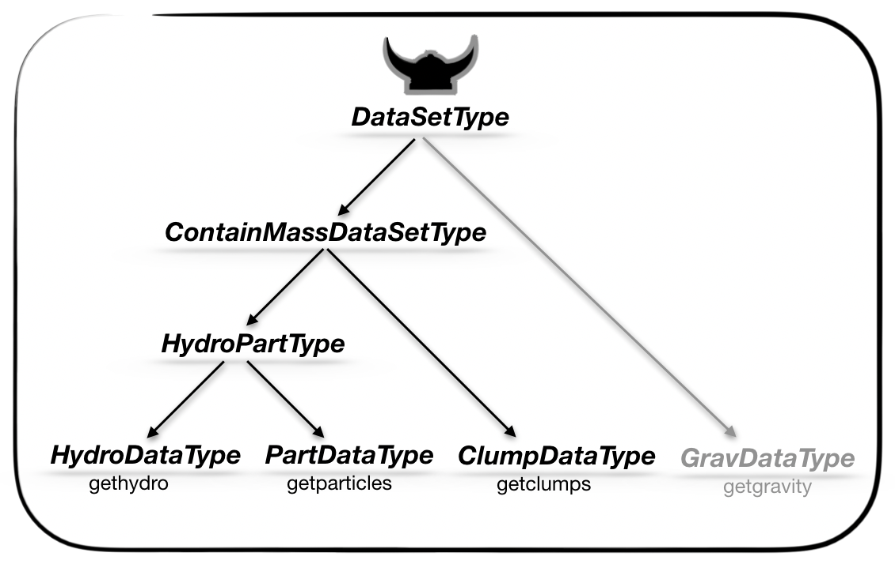

MERA.jl's comprehensive API for high-performance astrophysical data analysis and computational workflows
Types
Abstract type hierarchies

- HydroMapsType <: DataMapsType
- PartMapsType <: DataMapsType
List of types
Mera.ArgumentsTypeMera.CheckOutputNumberTypeMera.ClumpDataTypeMera.CompilationInfoTypeMera.ContainMassDataSetTypeMera.DataMapsTypeMera.DataSetTypeMera.DescriptorTypeMera.GridInfoTypeMera.Histogram2DMapTypeMera.HydroDataTypeMera.HydroMapsTypeMera.HydroPartTypeMera.InfoTypeMera.MaskTypeMera.PartDataTypeMera.PartInfoTypeMera.PartMapsTypeMera.PhysicalUnitsType002Mera.ScalesType002Mera.ThreadSafeProgressMera.ThreadSafeProgressMera.WStatType
Functions
Mera.JLD2flagMera.__init__Mera.amroverviewMera.amroverviewMera.amroverviewMera.analyze_amr_structureMera.average_mweighted_metaprogMera.average_velocityMera.batch_convert_meraMera.batchesMera.benchmark_buffer_sizesMera.benchmark_mera_ioMera.benchmark_metaprog_basic_calcMera.benchmark_multi_variable_projectionMera.benchmark_projection_hydroMera.benchmark_single_variable_projectionMera.bulk_velocityMera.bulk_velocity_metaprogMera.calculate_safe_thread_countMera.cell_shiftMera.center_of_massMera.center_of_massMera.center_of_mass_joint_metaprogMera.center_of_mass_metaprogMera.check_available_filesMera.check_safety_margin_violationMera.checkoutputsMera.comMera.comMera.complete_progress!Mera.configure_adaptive_ioMera.configure_mera_ioMera.construct_datatypeMera.convert_single_file_safeMera.create_progress_trackerMera.create_ultrafast_tableMera.createpathMera.createscales!Mera.dataoverviewMera.dataoverviewMera.dataoverviewMera.dataoverviewMera.ensure_optimal_io!Mera.export_vtkMera.export_vtkMera.extract_column_dataMera.filter_by_rangeMera.fmt_timeMera.get_available_memory_gbMera.get_cylinder_inclusion_weightMera.get_disk_info_commandMera.get_filtered_rangesMera.get_filtered_rangesMera.get_height_cylinderMera.get_memory_info_commandMera.get_memory_usage_percentageMera.get_network_info_commandMera.get_process_info_commandMera.get_radius_cylinderMera.get_radius_sphereMera.get_simulation_characteristicsMera.get_system_info_commandMera.get_total_memory_gbMera.get_unit_factor_fastMera.getclumpsMera.getextentMera.getgravityMera.getgravity_deprecatedMera.gethydroMera.gethydro_deprecatedMera.getinfoMera.getmassMera.getparticlesMera.getparticles_deprecatedMera.getpositionsMera.getvarMera.getvarMera.getvarMera.getvelocitiesMera.humanizeMera.infodataMera.interactive_mera_converterMera.iops_testMera.loaddataMera.log_envMera.makefileMera.map_amr_cells_to_grid!Mera.map_amr_cells_to_grid_adaptive!Mera.map_amr_cells_to_grid_surface_density!Mera.map_amr_cells_to_grid_with_spatial_index!Mera.mean_ciMera.mera_io_statusMera.msumMera.msum_metaprogMera.notifymeMera.openclose_testMera.optimize_mera_ioMera.parse_output_numberMera.patchfileMera.perform_sanity_checksMera.prep_cylindrical_shellrangesMera.prep_spherical_shellrangesMera.preprangesMera.preprangesMera.printtablememoryMera.printtimeMera.projectionMera.projectionMera.projectionMera.recommend_buffer_sizeMera.reset_auto_optimization!Mera.reset_mera_ioMera.run_benchmarkMera.safe_executeMera.safe_printlnMera.save_benchmark_resultsMera.savedataMera.send_resultsMera.shellregionMera.show_auto_optimization_statusMera.show_mera_configMera.show_threading_infoMera.smart_io_setupMera.smooth_transitionMera.storageoverviewMera.subregionMera.subregioncuboidMera.subregioncuboidMera.subregioncylinderMera.subregioncylinderMera.subregionsphereMera.subregionsphereMera.throughput_testMera.timed_notifyMera.timerfileMera.update_progress!Mera.update_progress!Mera.usedmemoryMera.viewallfieldsMera.viewdataMera.viewfieldsMera.viewmoduleMera.wstatMera.wstat_metaprog
Macros
Mera.@apply — MacroFind examples in the Mera Documentation for: filter data with pipeline macros
Mera.@filter — MacroFind examples in the Mera Documentation for: filter data with macros
Mera.@where — MacroFind examples in the Mera Documentation for: filter data with pipeline macros
Documentation Types
Mera.ArgumentsType — TypeMutable Struct: Contains fields to use as arguments in functions
Mera.CheckOutputNumberType — TypeMutable Struct: Contains the existing simulation snapshots in a folder and a list of the empty output-folders
Mera.ClumpDataType — TypeMutable Struct: Contains clump data and information about the selected simulation
ClumpDataType <: ContainMassDataSetType
Mera.CompilationInfoType — TypeMutable Struct: Contains the collected information about the compilation of RAMSES
Mera.ContainMassDataSetType — TypeAbstract Supertype of all datasets that contain mass variables
HydroPartType <: ContainMassDataSetType <: DataSetType
Mera.DataMapsType — TypeAbstract Supertype of all the different dataset type maps HydroMapsType <: DataMapsType PartMapsType <: DataMapsType
Mera.DataSetType — TypeAbstract Supertype of all the different dataset types
HydroPartType <: ContainMassDataSetType <: DataSetType
Mera.DescriptorType — TypeMutable Struct: Contains the collected information about the descriptors
Mera.GridInfoType — TypeMutable Struct: Contains the collected information about grid
Mera.Histogram2DMapType — TypeMutable Struct: Contains the 2D histogram returned by the function: histogram2 and information about the selected simulation
Mera.HydroDataType — TypeMutable Struct: Contains hydro data and information about the selected simulation
HydroDataType <: HydroPartType
Mera.HydroMapsType — TypeMutable Struct: Contains the maps/units returned by the hydro-projection information about the selected simulation
Mera.HydroPartType — TypeAbstract Supertype of data-sets that contain hydro and particle data
HydroPartType <: ContainMassDataSetType <: DataSetType
Mera.InfoType — TypeMutable Struct: Collected information about the selected simulation output
Mera.PartDataType — TypeMutable Struct: Contains particle data and information about the selected simulation
PartDataType <: HydroPartType
Mera.PartInfoType — TypeMutable Struct: Contains the collected information about particles
Mera.PartMapsType — TypeMutable Struct: Contains the maps/units returned by the particles-projection information about the selected simulation
Mera.PhysicalUnitsType002 — TypeMutable Struct: Contains the physical constants in cgs units
Mera.ScalesType002 — TypeMutable Struct: Contains the created scale factors from code to physical units
Mera.ThreadSafeProgress — TypeThreadSafeProgressMutable struct for managing progress bar updates across multiple threads. Prevents race conditions when multiple threads try to update progress simultaneously.
Fields
progress: ProgressMeter.Progress object for displaycurrent_file: Name of file currently being processedcompleted: Number of files completed so fartotal: Total number of files to processlock: ReentrantLock for thread synchronization
Mera.ThreadSafeProgress — MethodThreadSafeProgress(total::Int) -> ThreadSafeProgressConstructor for thread-safe progress tracker. Initializes progress bar with appropriate settings for file conversion display.
Progress Bar Configuration
- Shows completion ratio [completed/total]
- Updates every 0.5 seconds to avoid excessive output
- 40-character progress bar for good visual feedback
- Shows processing speed (files/second)
Mera.WStatType — TypeMutable Struct: Contains the output statistics returned by wstat
Mera.MaskType — TypeUnion Type: Mask-array that is of type Bool or BitArray MaskType = Union{Array{Bool,1},BitArray{1}}
Documentation Functions
JLD2.rconvert — MethodJLD2.rconvert(::Type{CodecLz4.LZ4FrameCompressor}, reconstructed_data)Custom conversion method for handling old LZ4FrameCompressor objects. This function is automatically called by JLD2 when it encounters type mismatches.
Problem Being Solved
Old files have LZ4FrameCompressor with header::TranscodingStreams.Memory field New code expects LZ4FrameCompressor with header::Vector{UInt8} field JLD2 can't automatically convert between these internal field types
Solution Strategy
Rather than trying to perfectly reconstruct the old object (which is complex and error-prone), we create a new, default LZ4FrameCompressor object. This works because:
- The actual compressed data is separate from the compressor object
- The compressor object is just metadata about compression settings
- A default compressor can successfully decompress the data
Type Piracy Note
This extends JLD2's rconvert function, which is technically "type piracy" but is the officially supported method for handling custom type conversions in JLD2
Mera.JLD2flag — MethodJLD2flag(first_flag::Bool) -> (Bool, Symbol)Determines the appropriate file mode for JLD2 operations.
- First write operation: creates new file (:write mode)
- Subsequent operations: append to existing file (:append mode)
Returns updated first_flag and corresponding file mode symbol.
Mera.__init__ — Method__init__()Automatically initialize Mera.jl functions
Mera.amroverview — Methodamroverview(dataobject::GravDataType; verbose::Bool=true)Get the number of cells and CPUs per AMR level for gravity data. Returns an IndexedTable with columns level, cells, cellsize, and optionally cpus.
Mera.amroverview — Methodamroverview(dataobject::HydroDataType; verbose::Bool=true)
amroverview(dataobject::GravDataType; verbose::Bool=true)
amroverview(dataobject::PartDataType; verbose::Bool=true)Generate an overview table showing the distribution of cells/particles across AMR levels.
Arguments
dataobject: AMR data object (HydroDataType, GravDataType, or PartDataType)verbose::Bool=true: Display progress information during calculation
Returns
IndexedTable: Table with columns::level: AMR refinement level:cells/:particles: Number of cells or particles at each level:cellsize: Physical size of cells at each level (Hydro/Grav only):cpus: Number of CPU domains at each level (if CPU info available)
Examples
```julia
Basic AMR overview for hydro data
gas = gethydro(info, verbose=false) table = amroverview(gas)
Silent processing
table = amroverview(gas, verbose=false)
Mera.amroverview — Methodamroverview(dataobject::PartDataType; verbose::Bool=true)Get the number of particles and CPUs per AMR level for particle data. Returns an IndexedTable with columns level, particles, and optionally cpus.
Mera.analyze_amr_structure — Methodanalyze_amr_structure(gas_data) → DictPerform comprehensive analysis of AMR data structure and refinement hierarchy.
Analyzes the adaptive mesh refinement structure to understand data complexity, refinement level distribution, and spatial extent. This information provides essential context for interpreting benchmark performance results.
Returns
Dictionary containing:
total_cells: Total number of AMR cellsdata_size_gb: Memory footprint in gigabyteslevel_range: (minlevel, maxlevel) refinement rangelevel_count: Number of distinct refinement levelslevel_stats: Per-level cell counts and percentagescomplexity_factor: Normalized complexity metric for performance scaling
Analysis Components
- Cell Count Statistics: Total cells and memory usage
- Refinement Level Distribution: Cell counts per refinement level
- Spatial Extent Analysis: Coordinate ranges and effective resolution
- Performance Metrics: Complexity weighting for benchmark interpretation
Example
gas_data = loaddata(300, "/path/to/ramses/", :hydro)
amr_stats = analyze_amr_structure(gas_data)
println("AMR complexity factor: $(amr_stats["complexity_factor"])")Mera.average_mweighted_metaprog — MethodMetaprogramming-optimized mass-weighted average with template generation. Fuses mass and variable data access for optimal performance.
Mera.average_velocity — MethodCalculate the average velocity (w/o mass-weight) of any ContainMassDataSetType:
average_velocity(dataobject::ContainMassDataSetType; unit::Symbol=:standard, weighting::Symbol=:mass, mask::MaskType=[false])
return Tuple{Float64, Float64, Float64,}Arguments
Required:
dataobject: needs to be of type: "ContainMassDataSetType"
Optional Keywords:
unit: the unit of the result (can be used w/o keyword): :standard (code units) :kms, :ms, :cm_s (of typye Symbol) ..etc. ; see for defined velocity-scales viewfields(info.scale)weighting: use different weightings: :mass (default), :volume (hydro), :nomask: needs to be of type MaskType which is a supertype of Array{Bool,1} or BitArray{1} with the length of the database (rows)
Mera.batch_convert_mera — Methodbatch_convert_mera(input_dir::String, output_dir::String,
start_output::Int, end_output::Int;
requested_threads::Int=Threads.nthreads(),
safety_margin::Float64=DEFAULT_SAFETY_MARGIN,
min_threads::Int=DEFAULT_MIN_THREADS,
max_threads::Int=DEFAULT_MAX_THREADS,
skip_existing::Bool=true,
show_confirmation::Bool=true) -> DictMain function for safe multithreaded batch conversion with active safety margin monitoring.
This function coordinates the entire conversion process including:
- System resource validation and safety checks
- File discovery and filtering by output number range
- Thread count optimization based on system constraints
- User confirmation and information display
- Multithreaded conversion with real-time monitoring
- Comprehensive results reporting and recommendations
Parameter Details
Required Parameters
input_dir: Source directory containing old JLD2 files with version issuesoutput_dir: Destination directory for converted files (created if doesn't exist)start_output: Starting output number for conversion range (inclusive)end_output: Ending output number for conversion range (inclusive)
Performance Tuning Parameters
requested_threads: Desired number of conversion threads (default: all available)safety_margin: Memory usage threshold as decimal 0.0-1.0 (default: 0.8 = 80%)min_threads: Minimum thread count even under resource constraints (default: 1)max_threads: Maximum thread count regardless of system capacity (default: 64)
Behavior Control Parameters
skip_existing: Skip files that already exist in output directory (default: true)show_confirmation: Display user confirmation prompt before starting (default: true)
Safety Margin System
The safety_margin parameter is now actively used throughout the process:
Pre-Conversion Phase
- Validates current system memory usage
- Adjusts thread recommendations based on available memory within safety limits
- Warns user if current usage already exceeds margin
During Conversion Phase
- Monitors memory usage before each file load operation
- Checks memory after data loading (peak usage point)
- Triggers automatic garbage collection on violations
- Counts total violations for reporting
Post-Conversion Phase
- Reports final memory state and violation statistics
- Provides recommendations for future conversions based on violation patterns
Return Value
Returns comprehensive dictionary with conversion statistics:
success: Number of files successfully convertedfailed: Number of files that failed conversionskipped: Number of files skipped (already existed)safety_violations: Number of times memory exceeded safety marginconversion_time: Total time spent in conversion (seconds)threads_used: Actual number of threads usedfinal_memory_usage_percent: Memory usage percentage at completion
Error Handling Strategy
The function handles errors gracefully:
- Individual file failures don't stop the batch
- Out-of-memory errors receive specific guidance
- System resource violations trigger automatic recovery
- All errors are logged with specific context
Example Usage
Basic conversion with default safety settings: results = batchconvertmera("/data/old", "/data/new", 100, 200)
Conservative conversion for large files: results = batchconvertera("/data/old", "/data/new", 100, 200; requestedthreads=4, safetymargin=0.9)
High-performance conversion with monitoring: results = batchconvertmera("/data/old", "/data/new", 100, 200; requestedthreads=16, safetymargin=0.7, skip_existing=false)
Mera.batches — MethodSplit 1:nfiles into chunks of size ≤ chunk.
Mera.benchmark_buffer_sizes — Methodbenchmark_buffer_sizes(simulation_path::String, output_num::Int;
test_sizes=[32768, 65536, 131072, 262144], verbose=true)Benchmark different buffer sizes to find the optimal setting for this specific simulation.
Mera.benchmark_mera_io — Methodbenchmark_mera_io(simulation_path::String, output_num::Int;
test_sizes=["32KB", "64KB", "128KB", "256KB"])Benchmark different I/O configurations to find optimal settings for your specific simulation.
This function tests various buffer sizes with your actual data to determine which configuration gives the best performance on your system.
Arguments
simulation_path: Path to your RAMSES simulation directoryoutput_num: Output number to test withtest_sizes: Array of buffer sizes to test (as strings)
Returns
- Dictionary with benchmark results and recommended optimal settings
Example
# Standard benchmark
results = benchmark_mera_io("/path/to/simulation", 300)
# Custom buffer sizes to test
results = benchmark_mera_io("/path/to/simulation", 300,
test_sizes=["64KB", "128KB", "256KB", "512KB"])
# Access results
optimal_buffer = results["optimal_buffer_size"]
performance_gain = results["performance_improvement"]What it does
- Tests each buffer size with your actual simulation data
- Measures getinfo() and gethydro() performance
- Identifies the optimal buffer size for your system
- Automatically applies the best settings
- Returns detailed performance comparison
Mera.benchmark_metaprog_basic_calc — MethodBenchmark symbolic vs original implementations. Validates correctness and measures performance improvements.
Mera.benchmark_multi_variable_projection — Functionbenchmark_multi_variable_projection(gas_data, n_threads::Int, n_runs::Int=10) → DictExecute multi-variable projection benchmark testing simultaneous computation of 10 hydro variables.
Performs comprehensive timing analysis of multi-variable projections computing 10 simultaneous hydro variables including velocity components, velocity dispersion, and cylindrical coordinates. This benchmark tests the threading efficiency for complex projection scenarios typical in astrophysical analysis workflows.
Variable Set (10 Variables)
- Velocity: :v (3D velocity field analysis)
- Velocity Dispersion: σ:, σx, :σy, :σz (turbulence and kinematic structure)
- Cylindrical Coordinates: :vrcylinder, :vϕcylinder, σrcylinder, σϕcylinder (disk dynamics)
- Thermal Soundspeed: :cs
Methodology
- Projection Type: Simultaneous multi-variable calculation (realistic workflow)
- Threading: Shared memory parallelization across variables and spatial bins
- Statistics: several repetitions with comprehensive error analysis
Performance Characteristics
Multi-variable projections exhibit different scaling behavior than single-variable:
- Memory Scaling: higher memory usage due to multiple output arrays
- Threading Efficiency: May differ due to increased memory bandwidth requirements
- Computational Complexity: Higher arithmetic intensity but better cache reuse
Arguments
gas_data: HydroDataType object containing AMR hydro simulation datan_threads::Int: Number of threads for parallel computationn_runs::Int=10: Statistical repetitions for robust measurement
Returns
Dictionary with detailed performance analysis:
mean_time,std_time: Multi-variable projection timing statisticsmean_memory: Peak memory usagesuccess_rate: Reliability metric (target: >95% for complex operations)coefficient_variation: Precision indicator for multi-variable timing
Performance Comparison
Compare with single-variable results to understand:
- Threading efficiency differences between simple/complex projections
- Memory bandwidth limitations in multi-variable scenarios
- Optimal thread counts for different projection complexities
Example
# Multi-variable benchmark for threading analysis
result = benchmark_multi_variable_projection(gas_data, 8, 10)
# Compare with single-variable efficiency
single_result = benchmark_single_variable_projection(gas_data, 8, 10)
efficiency_ratio = single_result["mean_time"] / result["mean_time"] * 10
println("Multi-variable efficiency: $(efficiency_ratio) variables per single-variable time")Mera.benchmark_projection_hydro — Functionbenchmark_projection_hydro(gas_data, thread_counts::Vector{Int}, n_runs::Int=10, output_file::String="") → DictExecute comprehensive AMR hydro projection benchmark with robust statistical analysis.
This function serves as the main coordinator for hydro projection performance testing. It performs AMR structure analysis, data quality validation, executes both single-variable and multi-variable projection benchmarks across specified thread counts, and exports results in multiple formats with comprehensive statistical analysis.
Benchmark Methodology
- Single-Variable Test: Surface density projection (:sd → Msun/pc²)
- Multi-Variable Test: 10 simultaneous variable projections: vars = [:v, :σ, :σx, :σy, :σz, :vrcylinder, :vϕcylinder, :σrcylinder, :σϕcylinder, :cs]
- Statistical Robustness: several repetitions per configuration with coefficient of variation
- Quality Control: Success rate monitoring (>80% threshold for reliable data)
- Memory Profiling: Peak memory usage and garbage collection analysis
Threading Analysis
Evaluates performance across thread counts with derived metrics:
- Speedup: Performance improvement vs single-threaded execution
- Efficiency: Speedup per thread (percentage of ideal scaling)
- Memory Scaling: Memory usage patterns across thread configurations
Output Files Generated
{output_file}.csv: Structured data for spreadsheet analysis and plotting{output_file}.json: Machine-readable structured data for programmatic access{output_file}_summary.txt: Human-readable performance report with insights
Arguments
gas_data: HydroDataType object from loaddata() or gethydrodata()thread_counts::Vector{Int}: Thread counts to benchmark [1, 2, 4, 8, 16, ...]n_runs::Int=10: Statistical repetitions per configuration (10 for robust analysis)output_file::String="": Output filename base (auto-generated timestamp if empty)
Returns
Dictionary containing complete benchmark results with keys:
n_threads,test_type,mean_time,std_time,speedup,efficiencymean_memory,success_rate,min_time,max_time,n_runs
Example Usage
# Load RAMSES hydro data
gas_data = loaddata(300, "/path/to/ramses/output/", :hydro)
# Run comprehensive benchmark (single + multi-variable)
results = benchmark_projection_hydro(gas_data, [1, 2, 4, 8, 16], 10, "performance_test")
# Results saved as:
# - performance_test.csv (for plotting with plot_results.jl)
# - performance_test.json (for programmatic analysis)
# - performance_test_summary.txt (human-readable report)Performance Insights
The benchmark automatically analyzes threading efficiency and provides guidance:
- Identifies optimal thread counts for your system and data size
- Detects threading bottlenecks and memory constraints
- Quantifies single vs multi-variable projection performance differences
- Provides statistical confidence intervals for all measurements
Integration Workflow
- Data Loading: Use Mera's loaddata() for your RAMSES simulation
- Benchmarking: Execute this function with desired thread counts
- Visualization: Use plot_results.jl to create performance dashboards
- Analysis: Review summary.txt for optimization recommendations
Mera.benchmark_single_variable_projection — Functionbenchmark_single_variable_projection(gas_data, n_threads::Int, n_runs::Int=10) → DictExecute single-variable surface density projection benchmark with robust statistical analysis.
Performs high-precision timing measurements of surface density (:sd → Msun/pc²) projections using the specified thread count. Implements comprehensive statistical analysis including warm-up runs, outlier detection, and memory profiling for reliable performance data.
Methodology
- Variable: Surface density (:sd) - most common astronomical observable
- Unit: Msun/pc² (solar masses per square parsec) - standard surface density unit
- Resolution: 128×128 projection grid (balanced performance/accuracy)
- Statistics: several repetitions with coefficient of variation analysis
- Quality Control: Success rate monitoring and outlier detection
Performance Monitoring
- Timing: Microsecond-precision measurement with warm-up runs
- Memory: Peak memory usage tracking during projection execution
- GC Analysis: Garbage collection overhead monitoring
- Progress: Real-time statistics with running averages and CV calculation
Arguments
gas_data: HydroDataType object containing AMR simulation datan_threads::Int: Number of threads for projection calculationn_runs::Int=10: Statistical repetitions (10 for robust analysis)
Returns
Dictionary with comprehensive performance metrics:
mean_time,std_time,min_time,max_time: Timing statistics (seconds)coefficient_variation: Measurement precision indicator (target: <5%)mean_memory: Average peak memory usage (GB)mean_gc_time: Average garbage collection overhead (seconds)success_rate: Fraction of successful runs (1.0 = 100% success)n_runs: Number of statistical repetitions performed
Example
# Single-threaded surface density benchmark
result = benchmark_single_variable_projection(gas_data, 1, 10)
println("Mean execution time: $(result["mean_time"]) seconds")
println("Measurement precision: $(result["coefficient_variation"]*100)%")Mera.bulk_velocity — MethodCalculate the average velocity (w/o mass-weight) of any ContainMassDataSetType:
bulk_velocity(dataobject::ContainMassDataSetType; unit::Symbol=:standard, weighting::Symbol=:mass, mask::MaskType=[false])
return Tuple{Float64, Float64, Float64,}Arguments
Required:
dataobject: needs to be of type: "ContainMassDataSetType"
Optional Keywords:
unit: the unit of the result (can be used w/o keyword): :standard (code units) :kms, :ms, :cm_s (of typye Symbol) ..etc. ; see for defined velocity-scales viewfields(info.scale)weighting: use different weightings: :mass (default), :volume (hydro), :nomask: needs to be of type MaskType which is a supertype of Array{Bool,1} or BitArray{1} with the length of the database (rows)
Mera.bulk_velocity_metaprog — MethodMetaprogramming-optimized bulk velocity with compile-time weighting dispatch. Generates specialized code for each weighting scheme at compile time.
Mera.calculate_safe_thread_count — Methodcalculate_safe_thread_count(requested_threads::Int;
safety_margin::Float64=DEFAULT_SAFETY_MARGIN,
min_threads::Int=DEFAULT_MIN_THREADS,
max_threads::Int=DEFAULT_MAX_THREADS) -> IntCalculate the maximum safe number of threads based on system constraints and current state. This function now actively uses the safety_margin to provide intelligent recommendations.
Algorithm
- Check current memory usage against safety margin
- Calculate available memory within safety limits
- Apply memory-based adjustment factor if resources are constrained
- Respect system core count and user-defined limits
- Ensure result stays within min/max bounds
Parameters
requested_threads: User's desired thread countsafety_margin: Maximum memory usage threshold (0.0-1.0)min_threads: Minimum allowable threads (safety floor)max_threads: Maximum allowable threads (performance ceiling)
Returns
Integer thread count that balances performance with system safety
Mera.cell_shift — Methodcell_shift(level::Int, value::Real, cell::Bool)Legacy compatibility function for shell region functions.
This function provides backward compatibility with older shell region code that used cellshift calls. The newer geometry helper functions (getradius*, getheight_*) handle cell vs point-based selection internally, so this function simply returns the input value unchanged.
Arguments
level::Int: AMR level (unused in current implementation)value::Real: The input value to be returnedcell::Bool: Cell vs point selection flag (unused in current implementation)
Returns
Real: The input value unchanged
Note
This function exists for compatibility with legacy shell region functions. New code should use the geometry helper functions directly.
Mera.center_of_mass — MethodCalculate the center-of-mass of any ContainMassDataSetType:
center_of_mass(dataobject::ContainMassDataSetType; unit::Symbol=:standard, mask::MaskType=[false])
return Tuple{Float64, Float64, Float64,}Arguments
Required:
dataobject: needs to be of type: "ContainMassDataSetType"
Optional Keywords:
unit: the unit of the result (can be used w/o keyword): :standard (code units), :Mpc, :kpc, :pc, :mpc, :ly, :au , :km, :cm (of typye Symbol) ..etc. ; see for defined length-scales viewfields(info.scale)mask: needs to be of type MaskType which is a supertype of Array{Bool,1} or BitArray{1} with the length of the database (rows)
Mera.center_of_mass — MethodCalculate the joint center-of-mass of any HydroPartType:
center_of_mass(dataobject::Array{HydroPartType,1}, unit::Symbol; mask::MaskArrayAbstractType=[[false],[false]])
return Tuple{Float64, Float64, Float64,}Arguments
Required:
dataobject: needs to be of type: "Array{HydroPartType,1}""
Optional Keywords:
unit: the unit of the result (can be used w/o keyword): :standard (code units), :Mpc, :kpc, :pc, :mpc, :ly, :au , :km, :cm (of typye Symbol) ..etc. ; see for defined length-scales viewfields(info.scale)mask: needs to be of type MaskArrayAbstractType which contains two entries with supertype of Array{Bool,1} or BitArray{1} and the length of the database (rows)
Mera.center_of_mass_joint_metaprog — MethodMetaprogramming-optimized joint center of mass for multiple datasets. Uses template-based loop generation with compile-time optimization.
Mera.center_of_mass_metaprog — MethodMetaprogramming-optimized center of mass with fused mass-weighted operations. Uses compile-time template generation for maximum performance.
Mera.check_available_files — Methodcheck_available_files(input_dir::String) -> DictAnalyze directory contents and provide comprehensive file information. Used for validation and user feedback about available data.
Returns Dictionary with keys:
- "files": Vector of valid JLD2 filenames
- "range": Tuple of (minoutput, maxoutput) or nothing if no files
- "gaps": Vector of missing output numbers within the range
- "total": Total count of valid files
Gap Detection Algorithm
Identifies missing files in the sequence, which can indicate:
- Incomplete simulation runs
- File transfer errors
- Storage problems
This helps users identify data integrity issues before conversion
Mera.check_safety_margin_violation — Methodcheck_safety_margin_violation(safety_margin::Float64) -> BoolDetermine if current system memory usage exceeds the configured safety margin. This is the core safety check function that prevents system overload.
Arguments
safety_margin: Decimal value (0.0-1.0) representing maximum allowed memory usage
Returns
trueif memory usage exceeds safety margin (dangerous situation)falseif memory usage is within safe limits
Example
- safety_margin = 0.8 means allow up to 80% memory usage
- If current usage is 85%, this returns true (violation)
Mera.checkoutputs — FunctionGet the existing simulation snapshots in a given folder
- returns field
outputswith Array{Int,1} containing the output-numbers of the existing simulations - returns field
misswith Array{Int,1} containing the output-numbers of empty simulation folders - returns field
pathas String
checkoutputs(path::String="./"; verbose::Bool=true)
return CheckOutputNumberTypeExamples
# Example 1:
# look in current folder
julia> N = checkoutputs();
julia> N.outputs
julia> N.miss
julia> N.path
# Example 2:
# look in given path
# without any keyword
julia>N = checkoutputs("simulation001");Mera.com — MethodCalculate the center-of-mass of any ContainMassDataSetType:
com(dataobject::ContainMassDataSetType; unit::Symbol=:standard, mask::MaskType=[false])
return Tuple{Float64, Float64, Float64,}Arguments
Required:
dataobject: needs to be of type: "ContainMassDataSetType"
Optional Keywords:
unit: the unit of the result (can be used w/o keyword): :standard (code units), :Mpc, :kpc, :pc, :mpc, :ly, :au , :km, :cm (of typye Symbol) ..etc. ; see for defined length-scales viewfields(info.scale)mask: needs to be of type MaskType which is a supertype of Array{Bool,1} or BitArray{1} with the length of the database (rows)
Mera.com — MethodCalculate the joint center-of-mass of any HydroPartType:
com(dataobject::Array{HydroPartType,1}, unit::Symbol; mask::MaskArrayAbstractType=[[false],[false]])
return Tuple{Float64, Float64, Float64,}Arguments
Required:
dataobject: needs to be of type: "Array{HydroPartType,1}""
Optional Keywords:
unit: the unit of the result (can be used w/o keyword): :standard (code units), :Mpc, :kpc, :pc, :mpc, :ly, :au , :km, :cm (of typye Symbol) ..etc. ; see for defined length-scales viewfields(info.scale)mask: needs to be of type MaskArrayAbstractType which contains two entries with supertype of Array{Bool,1} or BitArray{1} and the length of the database (rows)
Mera.complete_progress! — FunctionSend final completion notification for progress tracker
Parameters:
- tracker: Progress tracker to complete
- final_message: Optional final message
- include_summary: Include full execution summary (default: true)
Examples:
tracker = create_progress_tracker(1000, task_name="Simulation")
# ... do work with update_progress! calls ...
complete_progress!(tracker, "All galaxies processed successfully!")Mera.configure_adaptive_io — Methodconfigure_adaptive_io(simulation_path::String, output_num::Int; verbose=true)Automatically configure I/O settings based on simulation characteristics.
Mera.configure_mera_io — Methodconfigure_mera_io(; buffer_size="auto", cache=true, large_buffers=true, show_config=true)Manually configure Mera I/O settings with user-friendly parameters.
Arguments
buffer_size: Buffer size as string ("32KB", "64KB", "128KB", "256KB", "512KB") or "auto"cache=true: Enable file metadata caching for faster repeat operationslarge_buffers=true: Enable large buffer optimizationsshow_config=true: Display the applied configuration
Examples
# Use 128KB buffer with caching
configure_mera_io(buffer_size="128KB")
# Disable caching
configure_mera_io(buffer_size="64KB", cache=false)
# Maximum performance for very large simulations
configure_mera_io(buffer_size="512KB", cache=true, large_buffers=true)
# Minimal settings for small simulations
configure_mera_io(buffer_size="32KB", large_buffers=false)Buffer size recommendations
"32KB": Small simulations (< 50 CPU files)"64KB": Medium simulations (50-200 CPU files) - Default"128KB": Large simulations (200-500 CPU files)"256KB": Very large simulations (500-1000 CPU files)"512KB": Huge simulations (> 1000 CPU files)
Mera.construct_datatype — MethodCreate a New DataSetType from a Filtered Data Table
function construct_datatype(data::IndexedTables.AbstractIndexedTable, dataobject::HydroDataType)
return HydroDataType
function construct_datatype(data::IndexedTables.AbstractIndexedTable, dataobject::PartDataType)
return PartDataType
function construct_datatype(data::IndexedTables.AbstractIndexedTable, dataobject::ClumpDataType)
return ClumpDataType
function construct_datatype(data::IndexedTables.AbstractIndexedTable, dataobject::GravDataType)
return GravDataTypeExample
# read simulation information
julia> info = getinfo(420)
julia> gas = gethydro(info)
# filter and create a new` data table
julia> density = 3. /gas.scale.Msol_pc3
julia> filtered_db = @filter gas.data :rho >= density
# construct a new HydroDataType
# (comparable to the object "gas" but only with filtered data)
julia> gas_new = construct_datatype(filtered_db, gas)Mera.convert_single_file_safe — Methodconvert_single_file_safe(old_path::String, new_path::String, file_index::Int,
total_files::Int, safety_margin::Float64) -> BoolConvert a single JLD2 file with comprehensive safety monitoring and error handling. This is the core conversion function called by each thread.
Safety Features
- Pre-conversion memory check
- Post-loading memory monitoring
- Automatic garbage collection on violations
- Specific error handling for different failure modes
- Immediate memory cleanup after conversion
Parameters
old_path: Full path to source filenew_path: Full path to destination filefile_index: Current file number (for progress reporting)total_files: Total files being processedsafety_margin: Memory usage threshold for violation detection
Returns
true: Successful conversionfalse: Conversion failed (error logged)
Memory Management Strategy
- Check safety margin before loading (most memory-intensive operation)
- Monitor again after loading to catch memory spikes
- Force garbage collection and nullify data references
- Brief pause after GC to allow memory recovery
Mera.create_progress_tracker — MethodProgress tracking with automatic time-based notifications
Creates a progress tracker that automatically sends notifications at specified time intervals or progress milestones.
Parameters:
- total_items: Total number of items to process
- time_interval: Send notification every N seconds (default: 300 = 5 minutes)
- progress_interval: Send notification every N% progress (default: 10%)
- task_name: Name of the task for notifications
- zulip_channel: Zulip channel (default: "progress")
- zulip_topic: Zulip topic (default: "Task Progress")
Returns: ProgressTracker object with update!() method
Examples:
# Create progress tracker for 1000 items, notify every 5 minutes or 10% progress
tracker = create_progress_tracker(1000, task_name="Galaxy analysis")
for i in 1:1000
# Do some work
process_galaxy(i)
# Update progress (automatically sends notifications at intervals)
update_progress!(tracker, i)
end
# Final completion notification
complete_progress!(tracker)Mera.create_ultrafast_table — Functioncreate_ultrafast_table(vars_1D, pos_1D, cpus_1D, names_constr, nvarh_corr, nvarh_i_list, read_cpu, isamr, verbose=false, max_threads=Threads.nthreads())Creates IndexedTable with controlled threading for optimal performance.
Threading Control:
- Uses min(maxthreads, availablethreads, total_columns) for optimal load balancing
- Prevents thread over-subscription for small datasets
- Provides thread usage feedback when verbose=true
Mera.createpath — Method```julia createpath(output::Real, path::String; namelist::String="")
return FileNamesType ```
Mera.createscales! — MethodCreate an object with predefined scale factors from code to pysical units
function createscales!(dataobject::InfoType)
return ScalesType002Mera.dataoverview — Methoddataoverview(dataobject::ClumpDataType)Get the extrema (min/max) of each variable in the clump database. Returns an IndexedTable with extrema per variable.
Mera.dataoverview — Methoddataoverview(dataobject::GravDataType; verbose::Bool=true)Get total epot and min/max values of each gravity variable per level. Returns an IndexedTable summarizing epot and other variables.
Mera.dataoverview — Methoddataoverview(dataobject::HydroDataType; verbose::Bool=true)Provide a comprehensive overview of hydro simulation data including variable statistics.
Arguments
dataobject::HydroDataType: Hydro simulation data objectverbose::Bool=true: Control level of output detail
Returns
IndexedTable: Mass and min/max values for each variable per refinement level
Description
Analyzes hydro data and provides statistics across AMR levels.
Mera.dataoverview — Methoddataoverview(dataobject::PartDataType; verbose::Bool=true)Get the min/max value of each particle variable per AMR level. Returns an IndexedTable summarizing min/max per level.
Mera.ensure_optimal_io! — Methodensure_optimal_io!(info::InfoType; force_reoptimize=false, verbose=false)Automatically ensures optimal I/O settings based on simulation characteristics. This function is called transparently by gethydro(), getparticles(), and getgravity().
Arguments
info: InfoType object from getinfo()force_reoptimize=false: Force re-optimization even if already optimizedverbose=false: Enable detailed output (usually disabled for transparent operation)
Returns
trueif optimization was applied/verified,falseif failed
Mera.export_vtk — MethodExport hydro data to VTK format for visualization in tools like ParaView.
- export data that is present in your database and can be processed by getvar() (done internally)
- select scalar(s) and their unit(s)
- select a vector and its unit (like velocity)
- export data in log10
- creates binary files with optional compression
- supports multi-threading
-> generating per-level VTU files for scalar and optionally vector data and creates corresponding VTM multiblock container files to reference these VTU files.
export_vtk(
dataobject::HydroDataType, outprefix::String;
scalars::Vector{Symbol} = [:rho],
scalars_unit::Vector{Symbol} = [:nH],
scalars_log10::Bool=false,
vector::Array{<:Any,1}=[missing, missing, missing],
vector_unit::Symbol = :km_s,
vector_name::String = "velocity",
vector_log10::Bool=false,
positions_unit::Symbol = :standard,
lmin::Int = dataobject.lmin,
lmax::Int = dataobject.lmax,
chunk_size::Int = 50000,
compress::Bool = true,
interpolate_higher_levels::Bool = true,
max_cells::Int = 100_000_000,
verbose::Bool = true,
myargs::ArgumentsType=ArgumentsType()
)Arguments
Required:
dataobject::HydroDataType: The AMR data structure from MERA.jl containing variables like level, position, and physical quantities.outprefix::String: The base path and prefix for output files (e.g., "output/data" will create files like "output/data_L0.vtu").
Predefined/Optional Keywords:
scalars: List of scalar variables to export (default is :rho); from the database or a predefined quantity (see field: info, function getvar(), dataobject.data)scalars_unit: Sets the unit for the list of scalars (default is hydrogen number density in cm^-3).scalars_log10: Apply log10 to the scalars (default false).vector: List of vector component variables to export (default is missing); exports vector data as separate VTU filesvector_unit: Sets the unit for the vector components (default is km/s).vector_name: The name of the vector field in the VTK file (default: "velocity").vector_log10: Apply log10 to the vector components (default: false).positions_unit: Sets the unit of the cell positions (default: code units); usefull in paraview to select regionslmin: Minimum AMR level to process (default: simulations lmin); smaller levels are excluded in exportlmax: Maximum AMR level to process (default: simulations lmax); existing higher levels are interpolated down if interpolatehigherlevels is true, otherwise excluded from exportchunk_size::Int = 50000: Size of data chunks for processing (currently unused but reserved for future optimizations).chunk_size::Int = 50000: Size of data chunks for processing (currently unused but reserved for future optimizations).compress: Iftrue(default), enable compression.interpolate_higher_levels: Iftrue, interpolate data from higher levels down to givenlmax.max_cells: Maximum number of cells to export per level (caps output if exceeded, prioritizing denser regions), (default: 100000000)verbose: Iftrue(default), print detailed progress and diagnostic messages.
Mera.export_vtk — MethodExport particle data to VTK format for visualization in tools like ParaView.
- export data that is present in your database and can be processed by getvar() (done internally)
- select scalar(s) and their unit(s)
- select a vector and its unit (like velocity)
- export data in log10
- creates binary files with optional compression
- supports multi-threading
-> generates VTU files; each particle is represented as a vertex point with associated scalar and vector data.
export_vtk(
dataobject::PartDataType, outprefix::String;
scalars::Vector{Symbol} = [:mass],
scalars_unit::Vector{Symbol} = [:Msol],
scalars_log10::Bool=false,
vector::Array{<:Any,1}=[missing, missing, missing],
vector_unit::Symbol = :km_s,
vector_name::String = "velocity",
vector_log10::Bool=false,
positions_unit::Symbol = :standard,
chunk_size::Int = 50000,
compress::Bool = false,
max_particles::Int = 100_000_000,
verbose::Bool = true,
myargs::ArgumentsType=ArgumentsType()
)Arguments
Required:
- **
dataobject::PartDataType:*** needs to be of type "PartDataType" outprefix: The base path and prefix for output file (e.g., "foldername/particles" will create "foldername/particles.vtu").
Predefined/Optional Keywords:
scalars: List of scalar variables to export (default is particle mass); from the database or a predefined quantity (see field: info, function getvar(), dataobject.data)scalars_unit: Sets the unit for the list of scalars (default is Msun).scalars_log10: Apply log10 to the scalars (default false).vector: List of vector component variables to export (default is missing).vector_unit: Sets the unit for the vector components (default is km/s).vector_name: The name of the vector field in the VTK file (default: "velocity").vector_log10: Apply log10 to the vector components (default: false).positions_unit: Sets the unit of the particle positions (default: code units); usefull in paraview to select regionschunk_size::Int = 50000: Size of data chunks for processing (reserved for future optimizations).compress: Iffalse(default), disable compression.max_particles: Maximum number of particles to export (caps output if exceeded), (default: 100000000)verbose: Iftrue(default), print detailed progress and diagnostic messages.
Mera.extract_column_data — Methodextract_column_data(vars_1D, pos_1D, cpus_1D, nvarh_corr, nvarh_i_list, col_idx, read_cpu, isamr)Helper function to extract data for a specific column index. Centralizes the column extraction logic for better maintainability.
Mera.filter_by_range — Methodfilter_by_range(files::Vector{String}, start_num::Int, end_num::Int) -> Vector{String}Filter and sort files by output number range. Only files matching the RAMSES pattern and within the specified range are included.
Algorithm
- Parse output number from each filename
- Keep only files with valid numbers within [startnum, endnum]
- Sort numerically (not lexicographically) for consistent processing order
Why Sorting Matters
- Ensures predictable processing order
- Makes progress tracking more intuitive
- Helps with debugging and result verification
- Important for time-series data analysis workflows
Mera.fmt_time — MethodPretty-print duration in seconds as h/m/s.
Mera.get_available_memory_gb — Methodget_available_memory_gb() -> Float64Get currently available (free) system memory in GB. Uses Sys.free_memory() which returns bytes, converts to GB for readability.
Mera.get_cylinder_inclusion_weight — Methodget_cylinder_inclusion_weight(cx, cy, cz, level, cx_shift, cy_shift, cz_shift,
radius_shift, height_shift, cell, smooth_boundary, boundary_width)Calculate inclusion weight for a cell in cylindrical subregion with optional smooth boundaries.
Returns
Float64: Weight between 0.0 (excluded) and 1.0 (fully included)
Mera.get_disk_info_command — MethodGet cross-platform disk information command string
Returns the appropriate command string for getting disk usage information based on the current operating system.
Usage Example (use carefully - exposes disk info):
julia> cmd = get_disk_info_command() # Get command string
julia> notifyme(msg="Disk status:", capture_output=cmd) # Use only when necessaryMera.get_filtered_ranges — Methodget_filtered_ranges(gravitydata::GravDataType)Extract spatial ranges from a GravDataType for use with projection functions.
Returns the ranges in the format expected by projection functions: (xrange, yrange, zrange) as arrays of [min, max] values.
Arguments
gravitydata::GravDataType: Data object containing filtered spatial ranges
Returns
Tuple{Array,Array,Array}: (xrange, yrange, zrange) for projection functions
Example
gravity_subregion = subregioncuboid(gravity, xrange=[0.4, 0.6], yrange=[0.4, 0.6])
xr, yr, zr = get_filtered_ranges(gravity_subregion)
projection(gravity_subregion, vars; xrange=xr, yrange=yr, zrange=zr, ...)Mera.get_filtered_ranges — Methodget_filtered_ranges(hydrodata::HydroDataType)Extract spatial ranges from a HydroDataType for use with projection functions.
Returns the ranges in the format expected by projection functions: (xrange, yrange, zrange) as arrays of [min, max] values.
Arguments
hydrodata::HydroDataType: Data object containing filtered spatial ranges
Returns
Tuple{Array,Array,Array}: (xrange, yrange, zrange) for projection functions
Example
gas_subregion = subregioncuboid(gas, xrange=[0.4, 0.6], yrange=[0.4, 0.6])
xr, yr, zr = get_filtered_ranges(gas_subregion)
projection(gas_subregion, vars; xrange=xr, yrange=yr, zrange=zr, ...)Mera.get_height_cylinder — Methodget_height_cylinder(cz, level, cz_shift, cell)Calculate distance from cell to cylinder center plane for cylindrical subregion selection.
This function handles both cell-based and point-based selection modes:
- Cell-based (cell=true): Returns minimum distance from cell boundary to center plane
- Point-based (cell=false): Returns distance from cell center to center plane
Arguments
cz: Cell z-coordinate in grid unitslevel: AMR level of the cellcz_shift: Cylinder center plane position in physical coordinates [0,1]cell::Bool: Selection mode (true=cell-based, false=point-based)
Returns
Float64: Distance from cell to cylinder center plane in physical coordinates
Algorithm
For cell-based selection, returns 0 if the center plane intersects the cell, otherwise returns distance to closest cell boundary. For point-based selection, returns absolute distance from cell center to center plane.
Mera.get_memory_info_command — MethodGet cross-platform memory information command string
Returns the appropriate command string for getting detailed memory information based on the current operating system.
Usage Example (use carefully - exposes system info):
julia> cmd = get_memory_info_command() # Get command string only
julia> notifyme(msg="Memory status:", capture_output=cmd) # Use judiciouslyPlatform-specific commands:
- macOS: vmstat + memorypressure (native Darwin tools)
- Linux: free + /proc/meminfo (standard Linux memory tools)
- Windows: wmic memory queries (Windows Management Interface)
Mera.get_memory_usage_percentage — Methodget_memory_usage_percentage() -> Float64Calculate current memory usage as percentage of total system memory. Formula: (totalmemory - availablememory) / total_memory * 100 This gives the percentage of memory currently in use by all system processes.
Mera.get_network_info_command — MethodGet cross-platform network information command string
Returns the appropriate command string for getting network configuration based on the current operating system.
Usage Example (use carefully - exposes network info):
julia> cmd = get_network_info_command() # Get command string
julia> notifyme(msg="Network status:", capture_output=cmd) # Consider privacy implicationsMera.get_process_info_command — MethodGet cross-platform process information command string
Returns the appropriate command string for getting running process information based on the current operating system.
Usage Example (use carefully - exposes process info):
julia> cmd = get_process_info_command() # Get command string
julia> notifyme(msg="Process status:", capture_output=cmd) # Use only when necessaryMera.get_radius_cylinder — Methodget_radius_cylinder(cx, cy, level, cx_shift, cy_shift, cell)Calculate distance from cell to cylinder axis for cylindrical subregion selection.
This function handles both cell-based and point-based selection modes:
- Cell-based (cell=true): Returns minimum distance from cell boundary to cylinder axis
- Point-based (cell=false): Returns distance from cell center to cylinder axis
Arguments
cx, cy: Cell coordinates in grid unitslevel: AMR level of the cellcx_shift, cy_shift: Cylinder axis position in physical coordinates [0,1]cell::Bool: Selection mode (true=cell-based, false=point-based)
Returns
Float64: Distance from cell to cylinder axis in physical coordinates
Algorithm
For cell-based selection, finds the closest point on the cell boundary to the axis using clamp operations. For point-based selection, uses cell center.
Mera.get_radius_sphere — Methodget_radius_sphere(cx, cy, cz, level, cx_shift, cy_shift, cz_shift, cell)Calculate distance from cell to sphere center for spherical subregion selection.
This function handles both cell-based and point-based selection modes:
- Cell-based (cell=true): Returns minimum distance from cell boundary to sphere center
- Point-based (cell=false): Returns distance from cell center to sphere center
Arguments
cx, cy, cz: Cell coordinates in grid unitslevel: AMR level of the cellcx_shift, cy_shift, cz_shift: Sphere center position in physical coordinates [0,1]cell::Bool: Selection mode (true=cell-based, false=point-based)
Returns
Float64: Distance from cell to sphere center in physical coordinates
Algorithm
For cell-based selection, finds the closest point on the cell boundary to the center using clamp operations on each dimension. For point-based selection, uses the Euclidean distance from cell center to sphere center.
Example
# Distance from cell at (10,20,30) on level 2 to sphere at (0.5,0.5,0.5)
distance = get_radius_sphere(10, 20, 30, 2, 0.5, 0.5, 0.5, true)Mera.get_simulation_characteristics — Methodget_simulation_characteristics(simulation_path::String, output_num::Int)Analyze simulation folder to determine optimal I/O settings. Returns a dictionary with simulation characteristics and recommended settings.
Mera.get_system_info_command — MethodGet cross-platform system information command string
Returns the appropriate command string for getting system information (memory, disk, CPU) based on the current operating system.
Usage Examples (use carefully - exposes system info):
julia> cmd = get_system_info_command() # Get command string
julia> notifyme(msg="System status:", capture_output=cmd) # Consider privacy implicationsjulia> cmd = get_memory_info_command()
julia> notifyme(msg="Memory status:", capture_output=cmd)Cross-platform compatibility:
- macOS: Uses vmstat, memorypressure, df, sysctl
- Linux: Uses free, df, /proc/meminfo, /proc/cpuinfo
- Windows: Uses wmic, systeminfo commands
Mera.get_total_memory_gb — Methodget_total_memory_gb() -> Float64Get total installed system memory in GB. Uses Sys.total_memory() for accurate system capacity measurement.
Mera.get_unit_factor_fast — MethodGenerate optimized unit conversion at compile time. Eliminates runtime unit lookup overhead.
Mera.getclumps — MethodRead the clump-data:
- selected variables
- limited to a spatial range
- print the name of each data-file before reading it
- toggle verbose mode
- pass a struct with arguments (myargs)
getclumps( dataobject::InfoType;
vars::Array{Symbol,1}=[:all],
xrange::Array{<:Any,1}=[missing, missing],
yrange::Array{<:Any,1}=[missing, missing],
zrange::Array{<:Any,1}=[missing, missing],
center::Array{<:Any,1}=[0., 0., 0.],
range_unit::Symbol=:standard,
print_filenames::Bool=false,
verbose::Bool=true,
myargs::ArgumentsType=ArgumentsType() )Returns an object of type ClumpDataType, containing the clump-data table, the selected options and the simulation ScaleType and summary of the InfoType
return ClumpDataType()
# get an overview of the returned fields:
# e.g.:
julia> info = getinfo(100)
julia> clumps = getclumps(info)
julia> viewfields(clumps)
#or:
julia> fieldnames(clumps)Arguments
Required:
dataobject: needs to be of type: "InfoType", created by the function getinfo
Predefined/Optional Keywords:
vars: Currently, the length of the loaded variable list can be modified *(see examples below).vars: List of clump columns to read; default[:all]uses the file header. The order must match the columns in the clump files. You may specify fewer names (to read a subset) or more names if the data contains more columns than listed in the header.xrange: the range between [xmin, xmax] in units given by argumentrange_unitand relative to the givencenter; zero length for xmin=xmax=0. is converted to maximum possible lengthyrange: the range between [ymin, ymax] in units given by argumentrange_unitand relative to the givencenter; zero length for ymin=ymax=0. is converted to maximum possible lengthzrange: the range between [zmin, zmax] in units given by argumentrange_unitand relative to the givencenter; zero length for zmin=zmax=0. is converted to maximum possible lengthzrange: the range between [zmin, zmax] in units given by argumentrange_unitand relative to the givencenter; zero length for zmin=zmax=0. is converted to maximum possible length Note: spatial filtering uses the columns :peakx, :peaky, :peak_z. If you set any ranges, ensure these columns are included invars(or usevars=[:all]).range_unit: the units of the given ranges: :standard (code units), :Mpc, :kpc, :pc, :mpc, :ly, :au , :km, :cm (of type Symbol) ..etc. ; see for defined length-scales viewfields(info.scale)center: in units given by argumentrange_unit; by default [0., 0., 0.]; the box-center can be selected by e.g. [:bc], [:boxcenter], [value, :bc, :bc], etc..print_filenames: print on screen the current processed clump file of each CPUverbose: print timestamp, selected vars and ranges on screen; default: truemyargs: pass a struct of ArgumentsType to pass several arguments at once and to overwrite default values of xrange, yrange, zrange, center, range_unit, verbose
Important notes
- Spatial selection is applied to the clump peak position only (columns
:peak_x,:peak_y,:peak_z). It does not test the full clump extent/volume. - All clump columns are parsed as
Float64from the text files. Cast to other types as needed after loading. - Column names with dashes in the header must be requested as symbols with quotes, e.g.
Symbol("rho-")andSymbol("rho+"). - For faster I/O, pass a smaller
varslist to read only the columns you need. - When supplying a custom
varslist, ensure the data files contain at least that many columns and that the order matches the file columns; otherwise parsing will fail.
Defined Methods - function defined for different arguments
- getclumps(dataobject::InfoType; ...) # no given variables -> all variables loaded
- getclumps(dataobject::InfoType, vars::Array{Symbol,1}; ...) # one or several given variables -> array needed
Examples
# read simulation information
julia> info = getinfo(420)
# Example 1:
# read clump data of all variables, full-box
julia> clumps = getclumps(info)
# Example 2:
# read clump data of all variables
# data range 20x20x4 kpc; ranges are given in kpc relative to the box (here: 48 kpc) center at 24 kpc
julia> clumps = getclumps( info,
xrange=[-10.,10.],
yrange=[-10.,10.],
zrange=[-2.,2.],
center=[24., 24., 24.],
range_unit=:kpc )
# Example 3:
# give the center of the box by simply passing: center = [:bc] or center = [:boxcenter]
# this is equivalent to center=[24.,24.,24.] in Example 2
# the following combination is also possible: e.g. center=[:bc, 12., 34.], etc.
julia> clumps = getclumps( info,
xrange=[-10.,10.],
yrange=[-10.,10.],
zrange=[-2.,2.],
center=[33., :bc, 10.],
range_unit=:kpc )
# Example 4:
# Load less than the found 12 columns from the header of the clump files;
# Pass an array with the variables to the keyword argument *vars*.
# The order of the variables has to be consistent with the header in the clump files:
julia> clumps = getclumps(info, [ :index, :lev, :parent, :ncell,
:peak_x, :peak_y, :peak_z ])
# Example 5:
# Load more than the found 12 columns from the header of the clump files.
# E.g. the list can be extended with more names if there are more columns
# in the data than given by the header in the files.
# The order of the variables has to be consistent with the header in the clump files:
julia> clumps = getclumps(info, [ :index, :lev, :parent, :ncell,
:peak_x, :peak_y, :peak_z,
Symbol("rho-"), Symbol("rho+"),
:rho_av, :mass_cl, :relevance,
:vx, :vy, :vz ])
...Mera.getextent — MethodGet the extent of the dataset-domain:
function getextent( dataobject::DataSetType;
unit::Symbol=:standard,
center::Array{<:Any,1}=[0., 0., 0.],
center_unit::Symbol=:standard,
direction::Symbol=:z)
return (xmin, xmax), (ymin ,ymax ), (zmin ,zmax )Arguments
Required:
dataobject: needs to be of type: "DataSetType"
Predefined/Optional Keywords:
center: in unit given by argumentcenter_unit; by default [0., 0., 0.]; the box-center can be selected by e.g. [:bc], [:boxcenter], [value, :bc, :bc], etc..center_unit: :standard (code units), :Mpc, :kpc, :pc, :mpc, :ly, :au , :km, :cm (of typye Symbol) ..etc. ; see for defined length-scales viewfields(info.scale)direction: todounit: return the variables in given unit
Defined Methods - function defined for different arguments
- getextent( dataobject::DataSetType; # one given variable
- getextent( dataobject::DataSetType, unit::Symbol; ...) # one given variable with its unit
Mera.getgravity — MethodRead gravity leaf-cells with optional spatial selection and multithreading.
- Select variables (e.g., :epot, :ax, :ay, :az; include :cpu to add CPU column)
- Limit to a maximum refinement level (lmax)
- Select by spatial range around a center in a chosen unit
- Parallel file processing (configurable max_threads) with progress bar
- Verbose output with timestamps and table memory overview
- Pass an ArgumentsType struct (myargs) to override multiple keywords at once
getgravity(dataobject::InfoType;
lmax::Real=dataobject.levelmax,
vars::Array{Symbol,1}=[:all],
xrange::Array{<:Any,1}=[missing, missing],
yrange::Array{<:Any,1}=[missing, missing],
zrange::Array{<:Any,1}=[missing, missing],
center::Array{<:Any,1}=[0., 0., 0.],
range_unit::Symbol=:standard,
print_filenames::Bool=false,
verbose::Bool=true,
show_progress::Bool=true,
myargs::ArgumentsType=ArgumentsType(),
max_threads::Int=Threads.nthreads())Returns a GravDataType with:
- data: IndexedTable with position columns (:cx,:cy,:cz), optionally :level and/or :cpu, followed by selected variables
- info, lmin, lmax, boxlen, ranges, selectedgravvars, useddescriptors, scale
Arguments
- Required
- dataobject: InfoType from getinfo
- Keywords
- lmax: maximum refinement level to read (validated against the dataset)
- vars: gravity variables to load; default [:all]. Known names include :epot, :ax, :ay, :az. Include :cpu to add CPU column.
- xrange, yrange, zrange: [min,max] in units of range_unit relative to center; use missing to skip. Zero-length [0,0] is expanded to full box.
- center: selection center; default [0.,0.,0.]; you can use symbols like [:bc] for box center (also combinations like [val, :bc, :bc]).
- range_unit: units for ranges/center (e.g., :standard, :kpc, :pc, :Mpc, :km, :cm; Symbol)
- print_filenames: print each processed file path
- verbose: print timestamps and summaries
- show_progress: show a progress bar during reading
- myargs: ArgumentsType struct to override lmax, ranges, center, rangeunit, verbose, showprogress
- max_threads: cap threads used for table creation and column extraction (≤ available threads)
Defined methods
- getgravity(dataobject::InfoType; ...) # no vars → all variables loaded
- getgravity(dataobject::InfoType, var::Symbol; ...) # single variable (Symbol)
- getgravity(dataobject::InfoType, vars::Array{Symbol,1}; ...) # multiple variables
Examples
# Read all gravity variables at all levels, whole box
g = getgravity(info)
# Read only potential and acceleration components within a kpc-scale box around the center
g = getgravity(info, vars=[:epot, :ax, :ay, :az],
xrange=[-5,5], yrange=[-5,5], zrange=[-2,2],
center=[:bc], range_unit=:kpc)
# Include CPU column
g = getgravity(info, vars=[:cpu, :epot])
# Override several keywords at once via myargs
g = getgravity(info, myargs=ArgumentsType(lmax=12, range_unit=:kpc, verbose=false))Important notes
- Spatial selection is evaluated at cell centers (:cx,:cy,:cz).
- AMR vs uniform grid affects included columns and primary key: AMR adds :level.
- Variable names can also come from file descriptors; unknown indices are named :gravN.
Mera.getgravity_deprecated — MethodRead the leaf-cells of the gravity-data:
- select variables
- limit to a maximum level
- limit to a spatial range
- print the name of each data-file before reading it
- toggle verbose mode
- toggle progress bar
- pass a struct with arguments (myargs)
getgravity( dataobject::InfoType;
lmax::Real=dataobject.levelmax,
vars::Array{Symbol,1}=[:all],
xrange::Array{<:Any,1}=[missing, missing],
yrange::Array{<:Any,1}=[missing, missing],
zrange::Array{<:Any,1}=[missing, missing],
center::Array{<:Any,1}=[0., 0., 0.],
range_unit::Symbol=:standard,
print_filenames::Bool=false,
verbose::Bool=true,
show_progress::Bool=true,
myargs::ArgumentsType=ArgumentsType() )Returns an object of type GravDataType, containing the gravity-data table, the selected options and the simulation ScaleType and summary of the InfoType
return GravDataType()
# get an overview of the returned fields:
# e.g.:
julia> info = getinfo(100)
julia> grav = getgravity(info)
julia> viewfields(grav)
#or:
julia> fieldnames(grav)Arguments
Required:
dataobject: needs to be of type: "InfoType", created by the function getinfo
Predefined/Optional Keywords:
lmax: the maximum level to be read from the datavar(s): the selected gravity variables in arbitrary order: :all (default), :cpu, :epot, :ax, :ay, :azxrange: the range between [xmin, xmax] in units given by argumentrange_unitand relative to the givencenter; zero length for xmin=xmax=0. is converted to maximum possible lengthyrange: the range between [ymin, ymax] in units given by argumentrange_unitand relative to the givencenter; zero length for ymin=ymax=0. is converted to maximum possible lengthzrange: the range between [zmin, zmax] in units given by argumentrange_unitand relative to the givencenter; zero length for zmin=zmax=0. is converted to maximum possible lengthrange_unit: the units of the given ranges: :standard (code units), :Mpc, :kpc, :pc, :mpc, :ly, :au , :km, :cm (of typye Symbol) ..etc. ; see for defined length-scales viewfields(info.scale)center: in units given by argumentrange_unit; by default [0., 0., 0.]; the box-center can be selected by e.g. [:bc], [:boxcenter], [value, :bc, :bc], etc..print_filenames: print on screen the current processed gravity file of each CPUverbose: print timestamp, selected vars and ranges on screen; default: trueshow_progress: print progress bar on screenmyargs: pass a struct of ArgumentsType to pass several arguments at once and to overwrite default values of lmax, xrange, yrange, zrange, center, rangeunit, verbose, showprogress
Defined Methods - function defined for different arguments
- getgravity( dataobject::InfoType; ...) # no given variables -> all variables loaded
- getgravity( dataobject::InfoType, var::Symbol; ...) # one given variable -> no array needed
- getgravity( dataobject::InfoType, vars::Array{Symbol,1}; ...) # several given variables -> array needed
Examples
# read simulation information
julia> info = getinfo(420)
# Example 1:
# read gravity data of all variables, full-box, all levels
julia> grav = getgravity(info)
# Example 2:
# read gravity data of all variables up to level 8
# data range 20x20x4 kpc; ranges are given in kpc relative to the box (here: 48 kpc) center at 24 kpc
julia> grav = getgravity( info,
lmax=8,
xrange=[-10.,10.],
yrange=[-10.,10.],
zrange=[-2.,2.],
center=[24., 24., 24.],
range_unit=:kpc )
# Example 3:
# give the center of the box by simply passing: center = [:bc] or center = [:boxcenter]
# this is equivalent to center=[24.,24.,24.] in Example 2
# the following combination is also possible: e.g. center=[:bc, 12., 34.], etc.
julia> grav = getgravity( info,
lmax=8,
xrange=[-10.,10.],
yrange=[-10.,10.],
zrange=[-2.,2.],
center=[33., bc:, 10.],
range_unit=:kpc )
# Example 4:
# read gravity data of the variables epot and the x-acceleration, full-box, all levels
julia> grav = getgravity( info, [:epot, :ax] ) # use array for the variables
# Example 5:
# read gravity data of the single variable epot, full-box, all levels
julia> grav = getgravity( info, :epot ) # no array for a single variable needed
...Mera.gethydro — MethodRead the leaf-cells of the hydro-data:
- select variables
- limit to a maximum level
- limit to a spatial range
- multi-threading
- set a minimum density or sound speed
- check for negative values in density and thermal pressure
- print the name of each data-file before reading it
- toggle verbose mode
- toggle progress bar
- pass a struct with arguments (myargs)
gethydro(dataobject::InfoType;
lmax::Real=dataobject.levelmax,
vars::Array{Symbol,1}=[:all],
xrange::Array{<:Any,1}=[missing, missing],
yrange::Array{<:Any,1}=[missing, missing],
zrange::Array{<:Any,1}=[missing, missing],
center::Array{<:Any,1}=[0., 0., 0.],
range_unit::Symbol=:standard,
smallr::Real=0.,
smallc::Real=0.,
check_negvalues::Bool=false,
print_filenames::Bool=false,
verbose::Bool=true,
show_progress::Bool=true,
myargs::ArgumentsType=ArgumentsType(),
max_threads::Int=Threads.nthreads())Returns an object of type HydroDataType, containing the hydro-data table, the selected options and the simulation ScaleType and summary of the InfoType
return HydroDataType()
# get an overview of the returned fields:
# e.g.:
julia> info = getinfo(100)
julia> gas = gethydro(info)
julia> viewfields(gas)
#or:
julia> fieldnames(gas)Arguments
Required:
dataobject: needs to be of type: "InfoType", created by the function getinfo
Predefined/Optional Keywords:
lmax: the maximum level to be read from the datavar(s): the selected hydro variables in arbitrary order: :all (default), :cpu, :rho, :vx, :vy, :vz, :p, :var6, :var7...xrange: the range between [xmin, xmax] in units given by argumentrange_unitand relative to the givencenter; zero length for xmin=xmax=0. is converted to maximum possible lengthyrange: the range between [ymin, ymax] in units given by argumentrange_unitand relative to the givencenter; zero length for ymin=ymax=0. is converted to maximum possible lengthzrange: the range between [zmin, zmax] in units given by argumentrange_unitand relative to the givencenter; zero length for zmin=zmax=0. is converted to maximum possible lengthrange_unit: the units of the given ranges: :standard (code units), :Mpc, :kpc, :pc, :mpc, :ly, :au , :km, :cm (of typye Symbol) ..etc. ; see for defined length-scales viewfields(info.scale)center: in units given by argumentrange_unit; by default [0., 0., 0.]; the box-center can be selected by e.g. [:bc], [:boxcenter], [value, :bc, :bc], etc..smallr: set lower limit for density; zero means inactivesmallc: set lower limit for thermal pressure; zero means inactivecheck_negvalues: check loaded data of "rho" and "p" on negative values; false by defaultprint_filenames: print on screen the current processed hydro file of each CPUverbose: print timestamp, selected vars and ranges on screen; default: trueshow_progress: print progress bar on screenmyargs: pass a struct of ArgumentsType to pass several arguments at once and to overwrite default values of lmax, xrange, yrange, zrange, center, rangeunit, verbose, showprogress- **
max_threads: give a maximum number of threads that is smaller or equal to the number of assigned threads in the running environment
Defined Methods - function defined for different arguments
- gethydro( dataobject::InfoType; ...) # no given variables -> all variables loaded
- gethydro( dataobject::InfoType, var::Symbol; ...) # one given variable -> no array needed
- gethydro( dataobject::InfoType, vars::Array{Symbol,1}; ...) # several given variables -> array needed
Examples
# read simulation information
julia> info = getinfo(420)
# Example 1:
# read hydro data of all variables, full-box, all levels
julia> gas = gethydro(info)
# Example 2:
# read hydro data of all variables up to level 8
# data range 20x20x4 kpc; ranges are given in kpc relative to the box (here: 48 kpc) center at 24 kpc
julia> gas = gethydro( info,
lmax=8,
xrange=[-10.,10.],
yrange=[-10.,10.],
zrange=[-2.,2.],
center=[24., 24., 24.],
range_unit=:kpc )
# Example 3:
# give the center of the box by simply passing: center = [:bc] or center = [:boxcenter]
# this is equivalent to center=[24.,24.,24.] in Example 2
# the following combination is also possible: e.g. center=[:bc, 12., 34.], etc.
julia> gas = gethydro( info,
lmax=8,
xrange=[-10.,10.],
yrange=[-10.,10.],
zrange=[-2.,2.],
center=[33., bc:, 10.],
range_unit=:kpc )
# Example 4:
# read hydro data of the variables density and the thermal pressure, full-box, all levels
julia> gas = gethydro( info, [:rho, :p] ) # use array for the variables
# Example 5:
# read hydro data of the single variable density, full-box, all levels
julia> gas = gethydro( info, :rho ) # no array for a single variable needed
...Mera.gethydro_deprecated — MethodRead the leaf-cells of the hydro-data:
- select variables
- limit to a maximum level
- limit to a spatial range
- set a minimum density or sound speed
- check for negative values in density and thermal pressure
- print the name of each data-file before reading it
- toggle verbose mode
- toggle progress bar
- pass a struct with arguments (myargs)
gethydro( dataobject::InfoType;
lmax::Real=dataobject.levelmax,
vars::Array{Symbol,1}=[:all],
xrange::Array{<:Any,1}=[missing, missing],
yrange::Array{<:Any,1}=[missing, missing],
zrange::Array{<:Any,1}=[missing, missing],
center::Array{<:Any,1}=[0., 0., 0.],
range_unit::Symbol=:standard,
smallr::Real=0.,
smallc::Real=0.,
check_negvalues::Bool=false,
print_filenames::Bool=false,
verbose::Bool=true,
show_progress::Bool=true,
myargs::ArgumentsType=ArgumentsType() )Returns an object of type HydroDataType, containing the hydro-data table, the selected options and the simulation ScaleType and summary of the InfoType
return HydroDataType()
# get an overview of the returned fields:
# e.g.:
julia> info = getinfo(100)
julia> gas = gethydro(info)
julia> viewfields(gas)
#or:
julia> fieldnames(gas)Arguments
Required:
dataobject: needs to be of type: "InfoType", created by the function getinfo
Predefined/Optional Keywords:
lmax: the maximum level to be read from the datavar(s): the selected hydro variables in arbitrary order: :all (default), :cpu, :rho, :vx, :vy, :vz, :p, :var6, :var7...xrange: the range between [xmin, xmax] in units given by argumentrange_unitand relative to the givencenter; zero length for xmin=xmax=0. is converted to maximum possible lengthyrange: the range between [ymin, ymax] in units given by argumentrange_unitand relative to the givencenter; zero length for ymin=ymax=0. is converted to maximum possible lengthzrange: the range between [zmin, zmax] in units given by argumentrange_unitand relative to the givencenter; zero length for zmin=zmax=0. is converted to maximum possible lengthrange_unit: the units of the given ranges: :standard (code units), :Mpc, :kpc, :pc, :mpc, :ly, :au , :km, :cm (of typye Symbol) ..etc. ; see for defined length-scales viewfields(info.scale)center: in units given by argumentrange_unit; by default [0., 0., 0.]; the box-center can be selected by e.g. [:bc], [:boxcenter], [value, :bc, :bc], etc..smallr: set lower limit for density; zero means inactivesmallc: set lower limit for thermal pressure; zero means inactivecheck_negvalues: check loaded data of "rho" and "p" on negative values; false by defaultprint_filenames: print on screen the current processed hydro file of each CPUverbose: print timestamp, selected vars and ranges on screen; default: trueshow_progress: print progress bar on screenmyargs: pass a struct of ArgumentsType to pass several arguments at once and to overwrite default values of lmax, xrange, yrange, zrange, center, rangeunit, verbose, showprogress
Defined Methods - function defined for different arguments
- gethydro( dataobject::InfoType; ...) # no given variables -> all variables loaded
- gethydro( dataobject::InfoType, var::Symbol; ...) # one given variable -> no array needed
- gethydro( dataobject::InfoType, vars::Array{Symbol,1}; ...) # several given variables -> array needed
Examples
# read simulation information
julia> info = getinfo(420)
# Example 1:
# read hydro data of all variables, full-box, all levels
julia> gas = gethydro(info)
# Example 2:
# read hydro data of all variables up to level 8
# data range 20x20x4 kpc; ranges are given in kpc relative to the box (here: 48 kpc) center at 24 kpc
julia> gas = gethydro( info,
lmax=8,
xrange=[-10.,10.],
yrange=[-10.,10.],
zrange=[-2.,2.],
center=[24., 24., 24.],
range_unit=:kpc )
# Example 3:
# give the center of the box by simply passing: center = [:bc] or center = [:boxcenter]
# this is equivalent to center=[24.,24.,24.] in Example 2
# the following combination is also possible: e.g. center=[:bc, 12., 34.], etc.
julia> gas = gethydro( info,
lmax=8,
xrange=[-10.,10.],
yrange=[-10.,10.],
zrange=[-2.,2.],
center=[33., bc:, 10.],
range_unit=:kpc )
# Example 4:
# read hydro data of the variables density and the thermal pressure, full-box, all levels
julia> gas = gethydro( info, [:rho, :p] ) # use array for the variables
# Example 5:
# read hydro data of the single variable density, full-box, all levels
julia> gas = gethydro( info, :rho ) # no array for a single variable needed
...Mera.getinfo — MethodGet the simulation overview from RAMSES info, descriptor and output header files
getinfo(; output::Real=1, path::String="", namelist::String="", verbose::Bool=true)
return InfoTypeKeyword Arguments
output: timestep number (default=1)path: the path to the output folder relative to the current folder or absolute pathnamelist: give the path to a namelist file (by default the namelist.txt-file in the output-folder is read)verbose:: informations are printed on the screen by default
Examples
# read simulation information from output `1` in current folder
julia> info = getinfo()
# read simulation information from output `420` in given folder (relative path to the current working folder)
julia> info = getinfo(output=420, path="../MySimFolder/")
# or simply use
julia> info = getinfo(420, "../MySimFolder/")
# get an overview of the returned field-names
julia> propertynames(info)
# a more detailed overview
julia> viewfields(info)
...
julia> viewallfields(info)
...
julia> namelist(info)
...
julia> makefile(info)
...
julia> timerfile(info)
...
julia> patchfile(info)
...Mera.getmass — MethodGet mass-array from the dataset (cells/particles/clumps/...):
getmass(dataobject::HydroDataType)
getmass(dataobject::PartDataType)
getmass(dataobject::ClumpDataType)
return Array{Float64,1}Mera.getparticles — MethodRead the particle-data
- select variables
- limit to a spatial range
- multi-threading
- print the name of each data-file before reading it
- toggle verbose mode
- toggle progress bar
- pass a struct with arguments (myargs)
function getparticles( dataobject::InfoType;
lmax::Real=dataobject.levelmax, # Maximum refinement level to read
vars::Array{Symbol,1}=[:all], # Variables to read (:all for all available)
stars::Bool=true, # Include star particles
xrange::Array{<:Any,1}=[missing, missing], # X spatial range [min, max]
yrange::Array{<:Any,1}=[missing, missing], # Y spatial range [min, max]
zrange::Array{<:Any,1}=[missing, missing], # Z spatial range [min, max]
center::Array{<:Any,1}=[0., 0., 0.], # Center point for ranges
range_unit::Symbol=:standard, # Units for ranges (:standard, :kpc, etc.)
presorted::Bool=true, # Sort output table by key variables
print_filenames::Bool=false, # Print each CPU file being read
verbose::Bool=true, # Print progress information
show_progress::Bool=true, # Show progress bar
max_threads::Int=Threads.nthreads(), # Number of threads for parallel processing
myargs::ArgumentsType=ArgumentsType() ) # Struct to override default argumentsReturns an object of type PartDataType, containing the particle-data table, the selected and the simulation ScaleType and summary of the InfoType
return PartDataType()
# get an overview of the returned fields:
# e.g.:
julia> info = getinfo(100)
julia> particles = getparticles(info)
julia> viewfields(particles)
#or:
julia> fieldnames(particles)Arguments
Required:
dataobject: needs to be of type: "InfoType", created by the function getinfo
Predefined/Optional Keywords:
lmax: not definedstars: not definedvar(s): the selected particle variables in arbitrary order: :all (default), :cpu, :mass, :vx, :vy, :vz, :birth :metals, ...xrange: the range between [xmin, xmax] in units given by argumentrange_unitand relative to the givencenter; zero length for xmin=xmax=0. is converted to maximum possible lengthyrange: the range between [ymin, ymax] in units given by argumentrange_unitand relative to the givencenter; zero length for ymin=ymax=0. is converted to maximum possible lengthzrange: the range between [zmin, zmax] in units given by argumentrange_unitand relative to the givencenter; zero length for zmin=zmax=0. is converted to maximum possible lengthrange_unit: the units of the given ranges: :standard (code units), :Mpc, :kpc, :pc, :mpc, :ly, :au , :km, :cm (of typye Symbol) ..etc. ; see for defined length-scales viewfields(info.scale)center: in units given by argumentrange_unit; by default [0., 0., 0.]; the box-center can be selected by e.g. [:bc], [:boxcenter], [value, :bc, :bc], etc..presorted: presort data according to the key vars (by default)print_filenames: print on screen the current processed particle file of each CPUverbose: print timestamp, selected vars and ranges on screen; default: trueshow_progress: print progress bar on screenmyargs: an ArgumentsType struct to override multiple keywords at once: lmax, xrange, yrange, zrange, center, rangeunit, verbose, showprogress- **
max_threads: give a maximum number of threads that is smaller or equal to the number of assigned threads in the running environment
Defined Methods - function defined for different arguments
- getparticles( dataobject::InfoType; ...) # no given variables -> all variables loaded
- getparticles( dataobject::InfoType, var::Symbol; ...) # one given variable -> no array needed
- getparticles( dataobject::InfoType, vars::Array{Symbol,1}; ...) # several given variables -> array needed
Examples
# read simulation information
julia> info = getinfo(420)
# Example 1:
# read particle data of all variables, full-box, all levels
julia> particles = getparticles(info)
# Example 2:
# read particle data of all variables
# data range 20x20x4 kpc; ranges are given in kpc relative to the box (here: 48 kpc) center at 24 kpc
julia> particles = getparticles( info,
xrange=[-10., 10.],
yrange=[-10., 10.],
zrange=[-2., 2.],
center=[24., 24., 24.],
range_unit=:kpc )
# Example 3:
# give the center of the box by simply passing: center = [:bc] or center = [:boxcenter]
# this is equivalent to center=[24.,24.,24.] in Example 2
# the following combination is also possible: e.g. center=[:bc, 12., 34.], etc.
julia> particles = getparticles( info,
xrange=[-10.,10.],
yrange=[-10.,10.],
zrange=[-2.,2.],
center=[33., :bc, 10.],
range_unit=:kpc )
# Example 4:
# read particle data of the variables mass and the birth-time, full-box, all levels
julia> particles = getparticles( info, [:mass, :birth] ) # use array for the variables
# Example 5:
# read particle data of the single variable mass, full-box, all levels
julia> particles = getparticles( info, :mass ) # no array for a single variable needed
...Mera.getparticles_deprecated — MethodRead the particle-data
- select variables
- limit to a maximum range
- print the name of each data-file before reading it
- toggle verbose mode
- toggle progress bar
- pass a struct with arguments (myargs)
getparticles( dataobject::InfoType;
lmax::Real=dataobject.levelmax,
vars::Array{Symbol,1}=[:all],
stars::Bool=true,
xrange::Array{<:Any,1}=[missing, missing],
yrange::Array{<:Any,1}=[missing, missing],
zrange::Array{<:Any,1}=[missing, missing],
center::Array{<:Any,1}=[0., 0., 0.],
range_unit::Symbol=:standard,
presorted::Bool=true,
print_filenames::Bool=false,
verbose::Bool=true,
show_progress::Bool=true,
myargs::ArgumentsType=ArgumentsType() )Returns an object of type PartDataType, containing the particle-data table, the selected and the simulation ScaleType and summary of the InfoType
return PartDataType()
# get an overview of the returned fields:
# e.g.:
julia> info = getinfo(100)
julia> particles = getparticles(info)
julia> viewfields(particles)
#or:
julia> fieldnames(particles)Arguments
Required:
dataobject: needs to be of type: "InfoType", created by the function getinfo
Predefined/Optional Keywords:
lmax: not definedstars: not definedvar(s): the selected particle variables in arbitrary order: :all (default), :cpu, :mass, :vx, :vy, :vz, :birth :metals, ...xrange: the range between [xmin, xmax] in units given by argumentrange_unitand relative to the givencenter; zero length for xmin=xmax=0. is converted to maximum possible lengthyrange: the range between [ymin, ymax] in units given by argumentrange_unitand relative to the givencenter; zero length for ymin=ymax=0. is converted to maximum possible lengthzrange: the range between [zmin, zmax] in units given by argumentrange_unitand relative to the givencenter; zero length for zmin=zmax=0. is converted to maximum possible lengthrange_unit: the units of the given ranges: :standard (code units), :Mpc, :kpc, :pc, :mpc, :ly, :au , :km, :cm (of typye Symbol) ..etc. ; see for defined length-scales viewfields(info.scale)center: in units given by argumentrange_unit; by default [0., 0., 0.]; the box-center can be selected by e.g. [:bc], [:boxcenter], [value, :bc, :bc], etc..presorted: presort data according to the key vars (by default)print_filenames: print on screen the current processed particle file of each CPUverbose: print timestamp, selected vars and ranges on screen; default: trueshow_progress: print progress bar on screenmyargs: pass a struct of ArgumentsType to pass several arguments at once and to overwrite default values of lmax not!, xrange, yrange, zrange, center, rangeunit, verbose, showprogress
Defined Methods - function defined for different arguments
- getparticles( dataobject::InfoType; ...) # no given variables -> all variables loaded
- getparticles( dataobject::InfoType, var::Symbol; ...) # one given variable -> no array needed
- getparticles( dataobject::InfoType, vars::Array{Symbol,1}; ...) # several given variables -> array needed
Examples
# read simulation information
julia> info = getinfo(420)
# Example 1:
# read particle data of all variables, full-box, all levels
julia> particles = getparticles(info)
# Example 2:
# read particle data of all variables
# data range 20x20x4 kpc; ranges are given in kpc relative to the box (here: 48 kpc) center at 24 kpc
julia> particles = getparticles( info,
xrange=[-10., 10.],
yrange=[-10., 10.],
zrange=[-2., 2.],
center=[24., 24., 24.],
range_unit=:kpc )
# Example 3:
# give the center of the box by simply passing: center = [:bc] or center = [:boxcenter]
# this is equivalent to center=[24.,24.,24.] in Example 2
# the following combination is also possible: e.g. center=[:bc, 12., 34.], etc.
julia> particles = getparticles( info,
xrange=[-10.,10.],
yrange=[-10.,10.],
zrange=[-2.,2.],
center=[33., bc:, 10.],
range_unit=:kpc )
# Example 4:
# read particle data of the variables mass and the birth-time, full-box, all levels
julia> particles = getparticles( info, [:mass, :birth] ) # use array for the variables
# Example 5:
# read particle data of the single variable mass, full-box, all levels
julia> particles = getparticles( info, :mass ) # no array for a single variable needed
...Mera.getpositions — MethodGet the x,y,z positions from the dataset (cells/particles/clumps/...):
getpositions( dataobject::DataSetType, unit::Symbol;
direction::Symbol=:z,
center::Array{<:Any,1}=[0., 0., 0.],
center_unit::Symbol=:standard,
mask::MaskType=[false])
return x, y, zArguments
Required:
dataobject: needs to be of type: "DataSetType"
Predefined/Optional Keywords:
center: in unit given by argumentcenter_unit; by default [0., 0., 0.]; the box-center can be selected by e.g. [:bc], [:boxcenter], [value, :bc, :bc], etc..center_unit: :standard (code units), :Mpc, :kpc, :pc, :mpc, :ly, :au , :km, :cm (of typye Symbol) ..etc. ; see for defined length-scales viewfields(info.scale)direction: todounit: return the variables in given unitmask: needs to be of type MaskType which is a supertype of Array{Bool,1} or BitArray{1} with the length of the database (rows)
Defined Methods - function defined for different arguments
- getpositions( dataobject::DataSetType; ...) # one given dataobject
- getpositions( dataobject::DataSetType, unit::Symbol; ...) # one given dataobject and position unit
Mera.getvar — MethodGet variables or derived quantities from the dataset:
- overview the list of predefined quantities with: getinfo()
- select variable(s) and their unit(s)
- give the spatial center (with units) of the data within the box (relevant e.g. for radius dependency)
- relate the coordinates to a direction (x,y,z)
- pass a modified database
- pass a mask to exclude elements (cells/particles/...) from the calculation
getvar( dataobject::DataSetType, var::Symbol;
filtered_db::IndexedTables.AbstractIndexedTable=IndexedTables.table([1]),
center::Array{<:Any,1}=[0.,0.,0.],
center_unit::Symbol=:standard,
direction::Symbol=:z,
unit::Symbol=:standard,
mask::MaskType=[false],
ref_time::Real=dataobject.info.time)
return Array{Float64,1}
Arguments
Required:
dataobject: needs to be of type: "DataSetType"var(s): select a variable from the database or a predefined quantity (see field: info, function getvar(), dataobject.data)
Predefined/Optional Keywords:
filtered_db: pass a filtered or manipulated database together with the corresponding DataSetType object (required argument)center: in units given by argumentcenter_unit; by default [0., 0., 0.]; the box-center can be selected by e.g. [:bc], [:boxcenter], [value, :bc, :bc], etc..center_unit: :standard (code units), :Mpc, :kpc, :pc, :mpc, :ly, :au , :km, :cm (of typye Symbol) ..etc. ; see for defined length-scales viewfields(info.scale)direction: todounit(s): return the variable in given unitsmask: needs to be of type MaskType which is a supertype of Array{Bool,1} or BitArray{1} with the length of the database (rows)ref_time: reference zero-time for particle age calculation
Defined Methods - function defined for different arguments
- getvar( dataobject::DataSetType, var::Symbol; ...) # one given variable -> returns 1d array
- getvar( dataobject::DataSetType, var::Symbol, unit::Symbol; ...) # one given variable with its unit -> returns 1d array
- getvar( dataobject::DataSetType, vars::Array{Symbol,1}; ...) # several given variables -> array needed -> returns dictionary with 1d arrays
- getvar( dataobject::DataSetType, vars::Array{Symbol,1}, units::Array{Symbol,1}; ...) # several given variables and their corresponding units -> both arrays -> returns dictionary with 1d arrays
- getvar( dataobject::DataSetType, vars::Array{Symbol,1}, unit::Symbol; ...) # several given variables that have the same unit -> array for the variables and a single Symbol for the unit -> returns dictionary with 1d arrays
Examples
```julia
read simulation information
julia> info = getinfo(420) julia> gas = gethydro(info)
Example 1: get the mass for each cell of the hydro data (1dim array)
mass1 = getvar(gas, :mass) # in [code units] mass = getvar(gas, :mass) * gas.scale.Msol # scale the result from code units to solar masses mass = getvar(gas, :mass, unit=:Msol) # unit calculation, provided by a keyword argument mass = getvar(gas, :mass, :Msol) # unit calculation provided by an argument
Example 2: get the mass and |v| (several variables) for each cell of the hydro data
quantities = getvar(gas, [:mass, :v]) # in [code units] returns: Dict{Any,Any} with 2 entries: :mass => [8.9407e-7, 8.9407e-7, 8.9407e-7, 8.9407e-7, 8.9407e-7, 8.9407e-7, 8… :v => [0.0, 0.0, 0.0, 0.0, 0.0, 0.0, 0.0, 0.0, 0.0, 0.0 … 2.28274e-7, 2.…
quantities = getvar(gas, [:mass, :v], units=[:Msol, :kms]) # unit calculation, provided by a keyword argument quantities = getvar(gas, [:mass, :v], [:Msol, :kms]) # unit calculation provided by an argument
Example 3: get several variables in the same units by providing a single argument
quantities = getvar(gas, [:vx, :vy, :vz], :km_s) ...
Mera.getvar — MethodGet gravity data with hydro data as second positional argument
New simplified syntax:
# Single variable with unit
getvar(grav, hydro, :jeansmass, :Msol)
# Multiple variables with units
getvar(grav, hydro, [:jeansmass, :epot], [:Msol, :erg])
# Multiple variables with same unit
getvar(grav, hydro, [:T, :cs], :K)Mera.getvar — MethodGet gravity data with optional hydro data for advanced energy analysis
Arguments:
dataobject: needs to be of type: "GravDataType"var: select a variable from the database or a predefined quantity
Keyword Arguments:
hydro_data: optional hydro data object for energy calculations that require density/masscenter: center position (default: [0.,0.,0.])direction: direction for cylindrical coordinates (default: :z)- ...
Examples:
# Basic gravity analysis
grav_data = getvar(grav, :epot)
# Advanced energy analysis with hydro data (keyword syntax)
energy_density = getvar(grav, :gravitational_energy_density, hydro_data=hydro)
binding_energy = getvar(grav, :gravitational_binding_energy, hydro_data=hydro)
# NEW: Simplified positional syntax
jeans_mass = getvar(grav, hydro, :jeansmass, :Msol)
thermal_energy = getvar(grav, hydro, :etherm, :erg)
mixed_analysis = getvar(grav, hydro, [:epot, :T, :jeanslength], [:erg, :K, :pc])Mera.getvelocities — MethodGet the vx,vy,vz velocities from the dataset (cells/particles/clumps/...):
function getvelocities( dataobject::DataSetType, unit::Symbol;
mask::MaskType=[false])
return vx, vy, vzArguments
Required:
dataobject: needs to be of type: "DataSetType"
Predefined/Optional Keywords:
unit: return the variables in given unitmask: needs to be of type MaskType which is a supertype of Array{Bool,1} or BitArray{1} with the length of the database (rows)
Defined Methods - function defined for different arguments
- getvelocities( dataobject::DataSetType; ...) # one given dataobject
- getvelocities( dataobject::DataSetType, unit::Symbol; ...) # one given dataobject and velocity unit
Mera.humanize — MethodConvert a value to human-readable astrophysical units and round to ndigits
(pass the value in code units and the quantity specification (length, time) )
function humanize(value::Float64, scale::ScalesType002, ndigits::Int, quantity::String)
return value, value_unitMera.infodata — MethodGet the simulation overview from RAMSES, saved in JLD2 == function getinfo
infodata(output::Int;
path::String="./",
fname = "output_",
datatype::Any=:nothing,
verbose::Bool=true)
return InfoTypeKeyword Arguments
output: timestep numberpath: the path to the output JLD2 file relative to the current folder or absolute pathfname: "output"-> filename = "output***.jld2" by default, can be changed to "myname***.jld2"verbose:: informations are printed on the screen by default
Examples
# read simulation information from output `1` in current folder
julia> info = infodata(1) # filename="output_00001.jld2"
# read simulation information from output `420` in given folder (relative path to the current working folder)
julia> info = infodata(420, path="../MySimFolder/")
# or simply use
julia> info = infodata(420, "../MySimFolder/")
# get an overview of the returned field-names
julia> propertynames(info)
# a more detailed overview
julia> viewfields(info)
...
julia> viewallfields(info)
...
julia> namelist(info)
...
julia> makefile(info)
...
julia> timerfile(info)
...
julia> patchfile(info)
...Mera.interactive_mera_converter — Methodinteractive_mera_converter(input_dir::String, output_dir::String;
safety_margin::Float64=DEFAULT_SAFETY_MARGIN,
min_threads::Int=DEFAULT_MIN_THREADS,
max_threads::Int=DEFAULT_MAX_THREADS)Interactive mode for file conversion with comprehensive user guidance and system information.
This function provides a user-friendly interface that:
- Displays comprehensive system information and constraints
- Analyzes available files and detects potential issues
- Guides user through range and thread count selection
- Provides intelligent recommendations based on system state
- Executes conversion with all safety monitoring features
User Experience Flow
System Information Display
- Shows CPU core count and memory configuration
- Displays current memory usage and safety margin status
- Indicates thread count limits and recommendations
- Warns about any current resource constraints
File Analysis and Validation
- Scans input directory for valid RAMSES files
- Reports total file count and available output ranges
- Detects and reports gaps in file sequences
- Helps user identify potential data integrity issues
Guided Parameter Selection
- Prompts for output number range with sensible defaults
- Recommends thread count based on system capacity and safety constraints
- Allows user override with explanation of implications
- Provides real-time feedback on selections
Safety-Monitored Execution
- Calls main conversion function with user-selected parameters
- Provides same comprehensive monitoring as batch function
- Returns complete results for user review
Parameters
input_dir: Source directory containing old JLD2 filesoutput_dir: Destination directory for converted filessafety_margin: Memory usage threshold (default: 0.8 = 80%)min_threads: Minimum thread count (default: 1)max_threads: Maximum thread count (default: 64)
Example Usage
Basic interactive mode interactivemeraconverter("/data/old", "/data/new")
Conservative interactive mode for large files interactivemeraconverter("/data/old", "/data/new"; safetymargin=0.9, maxthreads=8)
Mera.iops_test — Methodiops_test(files; runs=3, levels=[1,2,4,8,16,24,32,48,64],
max_threads=Threads.nthreads())Measures file-open IOPS across thread counts. Returns (samples, stats, elapsed).
Mera.loaddata — MethodRead stored simulation data into a dataobject:
- supported datatypes: HydroDataType, PartDataType, GravDataType, ClumpDataType
- select a certain data range (data is fully loaded; the selected subregion is returned)
- toggle verbose mode
function loaddata(output::Int; path::String="./",
fname = "output_",
datatype::Symbol,
xrange::Array{<:Any,1}=[missing, missing],
yrange::Array{<:Any,1}=[missing, missing],
zrange::Array{<:Any,1}=[missing, missing],
center::Array{<:Any,1}=[0., 0., 0.],
range_unit::Symbol=:standard,
verbose::Bool=true,
myargs::ArgumentsType=ArgumentsType() )
return dataobject
Arguments
Required:
output: output numberdatatype: :hydro, :particles, :gravity or :clumps
Predefined/Optional Keywords:
path: path to the file; default is local path.fname: default name of the files "output_" and the running number is added. Change the string to apply a user-defined name.xrange: the range between [xmin, xmax] in units given by argumentrange_unitand relative to the givencenter; zero length for xmin=xmax=0. is converted to maximum possible lengthyrange: the range between [ymin, ymax] in units given by argumentrange_unitand relative to the givencenter; zero length for ymin=ymax=0. is converted to maximum possible lengthzrange: the range between [zmin, zmax] in units given by argumentrange_unitand relative to the givencenter; zero length for zmin=zmax=0. is converted to maximum possible lengthrange_unit: the units of the given ranges: :standard (code units), :Mpc, :kpc, :pc, :mpc, :ly, :au , :km, :cm (of typye Symbol) ..etc. ; see for defined length-scales viewfields(info.scale)myargs: pass a struct of ArgumentsType to pass several arguments at once and to overwrite default values of xrange, yrange, zrange, center, range_unit, verboseverbose: print timestamp and further information on screen; default: true
Defined Methods - function defined for different arguments
- loaddata(output::Int64; ...) # opens first datatype in the file
- loaddata(output::Int64, datatype::Symbol; ...)
- loaddata(output::Int64, path::String; ...)
- loaddata(output::Int64, path::String, datatype::Symbol; ...)
Mera.log_env — Methodlog_env()Prints Julia version, OS, CPU threads, timestamp, hostname, working directory, and project dependencies for reproducibility.
Mera.makefile — MethodGet a printout of the makefile:
makefile(object::InfoType)Mera.map_amr_cells_to_grid! — Methodmap_amr_cells_to_grid!(grid, weight_grid, x_coords, y_coords, values, weights,
level, grid_extent, grid_resolution, boxlen)Map AMR cells from one refinement level to a regular 2D grid with proper geometric handling.
This is the core function that converts AMR simulation data to gridded projections. It handles the coordinate transformation from 1-based RAMSES grid indices to physical coordinates and properly accounts for cell size, overlap, and area weighting.
Arguments
grid::AbstractMatrix{Float64}: Output grid for accumulated values (modified in-place)weight_grid::AbstractMatrix{Float64}: Output grid for accumulated weights (modified in-place)x_coords, y_coords::AbstractVector: AMR cell coordinates (1-based grid indices)values::AbstractVector{Float64}: Physical quantity values for each cellweights::AbstractVector{Float64}: Weighting values for each cell (usually mass)level::Int: AMR refinement level (determines cell size = boxlen/2^level)grid_extent::NTuple{4,Float64}: (xmin, xmax, ymin, ymax) in physical unitsgrid_resolution::NTuple{2,Int}: (nx, ny) pixel dimensions of output gridboxlen::Float64: Physical size of simulation domain
Algorithm
- Transform 1-based grid indices to physical coordinates
- Calculate cell boundaries (center ± halfcellsize)
- Find overlapping grid pixels using geometric intersection
- Distribute cell value/weight proportionally to overlap area
- Handle boundary cases and ensure no gaps in coverage
Performance Notes
- Uses @inbounds for speed in tight loops
- Pre-computes constants to avoid repeated calculations
- Conservative boundary handling prevents coordinate edge cases
Mera.map_amr_cells_to_grid_adaptive! — Methodmap_amr_cells_to_grid_adaptive!(grid, weight_grid, x_coords, y_coords, values, weights,
level, grid_extent, grid_resolution, boxlen; verbose=false)Intelligent algorithm dispatcher that selects the optimal mapping approach based on data size.
This function analyzes the dataset characteristics and automatically chooses between:
- Direct mapping: Efficient for small-medium datasets (< 50k cells or < 10k pixels)
- Spatial indexing: Optimized for large datasets with spatial locality benefits
Performance Heuristics
- Large datasets (>50k cells + >10k pixels): Uses hierarchical spatial bins for O(n log n) performance
- Smaller datasets: Uses direct O(n×m) approach with better cache locality
Arguments
Same as base mapping function, plus:
verbose::Bool=false: Print algorithm selection information
Mera.map_amr_cells_to_grid_surface_density! — Methodmap_amr_cells_to_grid_surface_density!(grid, weight_grid, x_coords, y_coords, values, weights,
level, grid_extent, grid_resolution, boxlen)Specialized mapping function for surface density calculations with RAMSES-consistent precision.
This function is optimized for surface density (mass per unit area) projections where precise geometric overlap calculations are essential for accurate mass conservation. It uses the same coordinate transformation as the main mapping function but with additional safeguards for mass conservation.
Key Features
- RAMSES-consistent coordinate handling: (gridindex - 0.5) * cellsize
- Exact geometric overlap calculation for precise mass distribution
- Perfect alignment across all AMR refinement levels
- Mass conservation through careful area weighting
Arguments
Same as map_amr_cells_to_grid! but optimized for surface density calculations.
Algorithm
- Transform coordinates using RAMSES convention
- Calculate precise cell-pixel overlap areas
- Distribute mass proportional to overlap area
- Maintain exact mass conservation across refinement levels
Mera.map_amr_cells_to_grid_with_spatial_index! — Methodmap_amr_cells_to_grid_with_spatial_index!(grid, weight_grid, x_coords, y_coords, values, weights,
level, grid_extent, grid_resolution, boxlen)High-performance mapping using hierarchical spatial indexing for large datasets.
This function implements a two-phase algorithm optimized for scenarios with many AMR cells:
- Spatial Indexing Phase: Divides the grid into spatial bins and indexes which cells affect each bin
- Processing Phase: Processes cells bin-by-bin for optimal cache locality and reduced redundant calculations
Performance Characteristics
- Time Complexity: O(n log n) vs O(n×m) for direct approach
- Memory: Uses spatial bins that scale with √n for optimal performance
- Cache Locality: Processes spatially adjacent cells together
- Best For: Datasets with >50k cells and large grids (>10k pixels)
Algorithm Details
- Adaptive Bin Sizing: Bin size adapts to cell count for optimal performance
- Hierarchical Indexing: Cells are indexed into spatial bins for fast lookup
- Same Coordinate System: Uses identical RAMSES coordinate transformation as direct method
- Identical Results: Produces exactly the same output as direct method, just faster
Mera.mean_ci — Methodmean_ci(data; α=0.05) → (μ, ci)Returns sample mean μ and two-sided (1–α) confidence interval half-width.
Mera.mera_io_status — Methodmera_io_status()Quick status check of Mera I/O configuration and performance.
Returns a summary of current settings and cache performance in a compact format.
Example
julia> mera_io_status()
"I/O: 128KB buffer, cache enabled (5 files), optimized ✅"Mera.msum — MethodCalculate the total mass of any ContainMassDataSetType:
msum(dataobject::ContainMassDataSetType; unit::Symbol=:standard, mask::MaskType=[false])
return Float64Arguments
Required:
dataobject: needs to be of type: "ContainMassDataSetType"
Optional Keywords:
unit: the unit of the result (can be used w/o keyword): :standard (code units) :Msol, :Mearth, :Mjupiter, :g, :kg (of typye Symbol) ..etc. ; see for defined mass-scales viewfields(info.scale)mask: needs to be of type MaskType which is a supertype of Array{Bool,1} or BitArray{1} with the length of the database (rows)
Mera.msum_metaprog — MethodMetaprogramming-optimized mass sum with compile-time specialization. Generates specialized code for each unit type, eliminating function call overhead.
Mera.notifyme — MethodGet an email and/or Zulip notification, e.g., when your calculations are finished.
Email notification:
- Requires the email client "mail" to be installed
- Put a file with the name "email.txt" in your home folder that contains your email address in the first line
Zulip notification (optional):
- Put a file with the name "zulip.txt" in your home folder with three lines:
- Line 1: Your Zulip bot email (e.g., mybot@zulip.yourdomain.com)
- Line 2: Your Zulip API key
- Line 3: Your Zulip server URL (e.g., https://zulip.yourdomain.com)
Output Capture (optional):
- capture_output: Can be a Cmd, Function, or String to capture terminal/function output
- The captured output will be appended to your message
File Attachments (optional):
- image_path: Single image file to attach
- attachments: Vector of file paths to attach (multiple files)
- attachment_folder: Path to folder - all image files (.png, .jpg, .jpeg, .gif, .svg) will be attached
- maxattachments: Maximum number of files to attach when using attachmentfolder (default: 10)
- maxfilesize: Maximum file size in bytes for non-image attachments (default: 25000000 ≈ 25 MB). Files larger than this are skipped with an explanatory warning (Zulip itself may enforce stricter limits – typical defaults are 25–50 MB). For images a stricter 1 MB optimization target is applied automatically to keep uploads fast and reliable; large images are resized down to <=1024px on the longest side.
Time Tracking (optional):
- start_time: Start time for execution tracking (use time() or now())
- include_timing: Boolean to include automatic timing information (default: false)
- timing_details: Include detailed performance metrics (memory, allocations)
Exception Handling (optional):
- exception_context: Exception object to include stack trace and error details
- includestacktrace: Boolean to include full stack trace (default: true when exceptioncontext provided)
julia> notifyme()julia> notifyme("Calculation 1 finished!")julia> notifyme(msg="Calculation finished!", zulip_channel="alerts", zulip_topic="Run Status")julia> notifyme(msg="Plot ready!", zulip_channel="plots", zulip_topic="Results", image_path="result.png")julia> notifyme(msg="Multiple results!", attachments=["plot1.png", "plot2.png", "data.csv"])julia> notifyme(msg="All plots from analysis!", attachment_folder="./plots/")julia> notifyme(msg="Limited plots!", attachment_folder="./plots/", max_attachments=5)julia> notifyme(msg="Large dataset results!", attachments=["data.csv"], max_file_size=50_000_000) # 50MB limit# Example: enforce a tighter 5 MB limit to avoid heavy uploads when on slow networks
julia> notifyme(msg="Quick summary only", attachments=["summary.log"], max_file_size=5_000_000)# Time tracking examples
julia> start = time(); heavy_computation(); notifyme("Computation done!", start_time=start)julia> notifyme("Analysis finished!", include_timing=true, timing_details=true)# Exception handling examples
julia> try
risky_computation()
catch e
notifyme("Computation failed!", exception_context=e)
endjulia> notifyme(msg="Directory listing:", capture_output=`ls`)julia> notifyme(msg="Function output:", capture_output=() -> sum(rand(100)))Mera.openclose_test — Methodopenclose_test(files; runs=3, N=50, levels=[1,2,4,8,16,24,32,48,64])Measures open+close time per file across threads with adaptive units. Returns (samples, stats, unit, factor, elapsed).
Mera.optimize_mera_io — Methodoptimize_mera_io(simulation_path::String, output_num::Int; benchmark=false, quiet=false)Automatically optimize Mera I/O settings based on your simulation characteristics.
This is the easiest way to get optimal performance - just provide your simulation path and output number, and Mera will analyze your data and apply the best settings.
Arguments
simulation_path: Path to your RAMSES simulation directoryoutput_num: Output number to analyze (e.g., 300)benchmark=false: Set totrueto run performance benchmarks for fine-tuningquiet=false: Set totrueto suppress output messages
Returns
trueif optimization was successful,falseotherwise
Examples
# Basic automatic optimization
optimize_mera_io("/Volumes/Storage/Simulations/mw_L10", 300)
# With benchmarking for maximum performance
optimize_mera_io("/Volumes/Storage/Simulations/mw_L10", 300, benchmark=true)
# Quiet mode for scripts
optimize_mera_io("/path/to/sim", 300, quiet=true)What it does
- Analyzes your simulation (file count, sizes, AMR structure)
- Recommends optimal buffer size based on simulation characteristics
- Enables file metadata caching for faster repeat operations
- Optionally benchmarks different settings to find the absolute best performance
Simulation size recommendations
- Small (< 50 files): 32KB buffer
- Medium (50-200 files): 64KB buffer
- Large (200-500 files): 128KB buffer
- Very large (500-1000 files): 256KB buffer
- Huge (> 1000 files): 512KB buffer
Mera.parse_output_number — Methodparse_output_number(filename::String) -> Union{Int, Nothing}Extract numerical output ID from RAMSES-style filename. Expected format: output_XXXXX.jld2 where XXXXX is zero-padded number
Examples
- "output_00100.jld2" -> 100
- "output_12345.jld2" -> 12345
- "random_file.jld2" -> nothing (doesn't match pattern)
- "output_abc.jld2" -> nothing (non-numeric)
Implementation Details
Uses regex pattern matching to ensure robust parsing Returns nothing for invalid filenames to allow filtering
Mera.patchfile — MethodGet a printout of the patchfile:
patchfile(object::InfoType)Mera.perform_sanity_checks — Methodperform_sanity_checks(gas_data) → BoolExecute comprehensive data quality validation with 5 critical checks.
Validates hydro simulation data quality and completeness before benchmark execution. Ensures reliable benchmark results by detecting common data issues that could affect projection performance measurements.
Validation Checks
- Cell Count Validation: Minimum 1000 cells for statistical reliability
- Required Variables: Presence of essential hydro variables (:ρ, :cx, :cy, :cz)
- Physical Density: Positive density values within reasonable ranges
- Coordinate Extent: Non-degenerate spatial coverage for meaningful projections
- AMR Level Consistency: Valid refinement level range and distribution
Quality Threshold
Returns true if ≥80% of checks pass (4/5), indicating acceptable data quality for benchmark execution. Failed checks are reported with specific guidance.
Example
if perform_sanity_checks(gas_data)
println("✅ Data quality sufficient for benchmarking")
results = benchmark_projection_hydro(gas_data, [1,2,4,8], 5, "test")
else
error("❌ Data quality issues detected - resolve before benchmarking")
endReturns
true: Data passes quality threshold (≥80% checks successful)false: Data fails quality threshold, benchmarking not recommended
Mera.prep_cylindrical_shellranges — Methodcylindrical shell ranges convert given ranges + radius and print overview on screen used for shellregions...
Mera.prep_spherical_shellranges — Methodspherical shell ranges convert given ranges + radius and print overview on screen used for shellregions...
Mera.prepranges — Methodcuboid ranges convert given ranges and print overview on screen used for gethydro, getparticles, getgravity, getclumps..., subregions...
Mera.prepranges — Methodcylinder ranges (height != 0.), sphere ranges (height==0.) convert given ranges + radius and print overview on screen used for subregions...
Mera.printtablememory — Methodprinttablememory(data, verbose::Bool)Print memory usage information for a data table when verbose mode is enabled.
Arguments
data: Data object whose memory usage should be displayedverbose::Bool: Whether to display the memory information
Examples
# Display memory usage for a data table
printtablememory(hydro_data, true)Mera.printtime — Functionprinttime(text::String="", verbose::Bool=verbose_mode)Print a Mera timestamp with optional text message to the screen when verbose mode is enabled.
Arguments
text::String="": Optional text message to display before the timestampverbose::Bool=verbose_mode: Control output display (uses globalverbose_modeby default)
Examples
# Print timestamp with default message
printtime()
# Print timestamp with custom message
printtime("Starting calculation")
# Override verbose setting
printtime("Debug info", true)Mera.projection — MethodCombined Hydro + Gravity Projection Functions
These convenience overloads accept both HydroDataType and GravDataType arguments, enabling access to gravity-derived quantities while maintaining hydro mass weighting.
# Single variable projection
projection(hydro, gravity, :epot) # Gravity potential with hydro weighting
projection(hydro, gravity, :rho, :g_cm3) # Hydro density (works as before)
# Multiple variables with same units
projection(hydro, gravity, [:epot, :rho], :standard) # Mixed gravity/hydro variables
# Multiple variables with different units
projection(hydro, gravity, [:epot, :rho], [:erg, :g_cm3]) # Custom units per variableMera.projection — MethodAMR Hydro Projection Functions
This module provides high-performance functionality for projecting AMR (Adaptive Mesh Refinement) hydrodynamic simulation data onto regular 2D grids. The projection engine handles multi-level AMR data with proper coordinate transformations, geometric mapping, and optimized parallel processing.
Architecture Overview
The projection system uses variable-based parallelization where each thread processes one variable across all AMR levels. This approach eliminates the costly combining phase that traditional chunked parallelization requires, resulting in significant performance improvements.
Key Design Principles:
- Thread Safety: No shared mutable state between threads
- Memory Efficiency: Direct allocation without memory pools
- Performance: Variable-based parallelization eliminates combining overhead
- Conservation: Mass-preserving cell-to-pixel mapping
- Flexibility: Support for multiple projection directions and coordinate systems
Core Functionality
Data Projection Features:
- Multi-resolution mapping: Projects AMR cells from different refinement levels onto uniform grids
- Variable projection: Supports density, surface density, velocity, pressure, temperature and derived quantities
- Flexible grid sizing: Custom resolution, pixel size, or automatic sizing based on AMR levels
- Spatial filtering: Range-based data selection in x, y, z dimensions with thin slice support
- Weighting schemes: Mass weighting (default), volume weighting, or custom weighting functions
- Direction control: Project along x, y, or z directions with proper coordinate remapping
AMR-Specific Features:
- Conservative mapping: Mass-conserving cell-to-pixel mapping with geometric overlap calculations
- Level-specific processing: Individual handling of each AMR refinement level for accuracy
- Boundary handling: Robust treatment of cell boundaries and partial overlaps
- Coordinate transformations: Automatic handling of different AMR coordinate systems
Main Projection Function
Create high-performance 2D projections of AMR hydro data with full control over resolution, spatial ranges, and processing options. This function automatically selects between sequential and variable-based parallel processing based on data characteristics.
Function Signature
projection(dataobject::HydroDataType, vars::Array{Symbol,1};
units::Array{Symbol,1}=[:standard],
lmax::Real=dataobject.lmax,
res::Union{Real, Missing}=missing,
pxsize::Array{<:Any,1}=[missing, missing],
mask::Union{Vector{Bool}, MaskType}=[false],
direction::Symbol=:z,
weighting::Array{<:Any,1}=[:mass, missing],
mode::Symbol=:standard,
xrange::Array{<:Any,1}=[missing, missing],
yrange::Array{<:Any,1}=[missing, missing],
zrange::Array{<:Any,1}=[missing, missing],
center::Array{<:Any,1}=[0., 0., 0.],
range_unit::Symbol=:standard,
data_center::Array{<:Any,1}=[missing, missing, missing],
data_center_unit::Symbol=:standard,
verbose::Bool=true,
show_progress::Bool=true,
verbose_threads::Bool=false,
myargs::ArgumentsType=ArgumentsType())
return HydroMapsTypeArguments
Required Parameters:
dataobject::HydroDataType: AMR hydro simulation data loaded by Mera.jl- Must contain spatial coordinates and hydro variables
- Supports RAMSES, ENZO, and other AMR formats
vars::Array{Symbol,1}: Variables to project (e.g., [:rho, :vx, :vy] or [:sd])- Multiple variables trigger automatic variable-based parallelization
- Single variables use optimized sequential processing
Grid Resolution Control:
res::Union{Real, Missing}: Pixel count per dimension (e.g., res=512 → 512×512 grid)- Higher values increase precision but require more memory
- Recommended: 256-1024 for most applications
lmax::Real: Use 2^lmax pixels when res not specified (default: dataobject.lmax)- Automatically matches finest AMR level resolution
pxsize::Array: Physical pixel size[value, unit](overrides res/lmax)- Direct control over spatial resolution
Spatial Range Control:
xrange/yrange/zrange::Array: Spatial bounds [min, max] relative to center- Define the physical region to project (e.g., [-10, 10] for ±10 units)
- Units controlled by range_unit parameter
center::Array: Projection center coordinates (use [:bc] for box center)- Can be physical coordinates or special values like [:bc], [:com]
range_unit::Symbol: Units for ranges/center (:kpc, :Mpc, :pc, :standard, etc.)- Ensures consistent spatial scaling across different simulations
direction::Symbol: Projection direction (:x, :y, :z)- Determines which spatial dimension is integrated over
Data Processing Options:
weighting::Array: Variable for weighting[quantity, unit](default:[:mass])- Controls how cell values are averaged: mass-weighted, volume-weighted, etc.
- Use
[:none]for simple geometric averaging
mode::Symbol: Processing mode (:standard or :sum)- :standard → weighted averages (typical for intensive quantities)
- :sum → accumulative totals (for extensive quantities like mass)
mask::Union{Vector{Bool}, MaskType}: Boolean mask to exclude cells- Filter out unwanted regions or apply custom selection criteria
units::Array{Symbol,1}: Output units for projected variables- Convert results to desired physical units automatically
Advanced Options:
data_center/data_center_unit: Alternative center for data calculations- When different from projection center (useful for coordinate transformations)
verbose::Bool: Print diagnostic information during processing (default: true)- Shows progress, memory usage, and basic threading information
show_progress::Bool: Display progress bar for level-by-level processing (default: true)- Visual feedback for long-running projections
verbose_threads::Bool: Show detailed multithreading diagnostics (default: false)- Enable for debugging parallel performance or thread behavior
myargs::ArgumentsType: Struct to pass multiple arguments simultaneously- Convenient for passing common parameter sets
Method Variants
The projection function supports multiple calling patterns for convenience:
# Single variable projection
projection(dataobject, :rho) # Density with default settings
projection(dataobject, :rho, unit=:g_cm3) # Density in specific units
# Multiple variables with same units
projection(dataobject, [:v, :vx, :vy], :km_s) # Multiple vars, single unit
# Multiple variables with different units
projection(dataobject, [:rho, :sd], [:g_cm3, :Msol_pc2]) # Different units per variable
# Surface density projection (special handling)
projection(dataobject, :sd, :Msol_pc2) # Surface density in solar masses per pc²Usage Examples
Basic Density Projection
# Simple density map of full simulation box (sequential processing)
density_map = projection(gas, :rho, unit=:g_cm3, res=512)
# High resolution central region with optimal settings
density_map = projection(gas, :rho, unit=:g_cm3,
xrange=[-10, 10], yrange=[-10, 10],
center=[:bc], range_unit=:kpc, res=1024)Multi-Variable Analysis (Parallel Processing)
# Velocity field analysis (automatic variable-based parallelization)
velocity_maps = projection(gas, [:vx, :vy, :vz], unit=:km_s,
direction=:z, res=512)
# Output: 🧵 Using parallel processing with 3 threads (one per variable)
# Combined density and velocity (optimal parallel performance)
hydro_maps = projection(gas, [:rho, :vx, :vy], [:g_cm3, :km_s, :km_s],
xrange=[-5, 5], yrange=[-5, 5],
center=[:bc], range_unit=:kpc)
# Output: ✅ Parallel projection completed successfullyAdvanced AMR Projections
# High-precision thin slice (demonstrates AMR coordinate handling)
thin_slice = projection(gas, :sd, :Msol_pc2,
zrange=[0.49, 0.51], center=[:bc],
range_unit=:standard, direction=:z, res=1024)
# Volume-weighted projection for physical accuracy
volume_proj = projection(gas, :rho,
weighting=[:volume, :cm3],
mode=:sum, res=512)
# Large multi-variable projection (optimal parallel performance)
comprehensive = projection(gas, [:rho, :vx, :vy, :vz, :cs],
[:g_cm3, :km_s, :km_s, :km_s, :km_s],
res=2048, verbose_threads=true)
# Shows detailed threading diagnostics for performance analysisDirection-Specific Projections
# X-direction projection (YZ plane) - parallel processing for multiple variables
x_proj = projection(gas, [:rho, :vx], [:g_cm3, :km_s],
direction=:x, yrange=[-10, 10], zrange=[-5, 5],
center=[:bc], range_unit=:kpc)
# Y-direction projection (XZ plane) - sequential processing for single variable
y_proj = projection(gas, :sd, :Msol_pc2,
direction=:y, xrange=[-20, 20], zrange=[-10, 10],
center=[:bc], range_unit=:kpc)Threading Control and Performance Monitoring
# Basic thread information (always shown with verbose=true)
density_map = projection(gas, :rho, :g_cm3, res=512)
# Output: Available threads: 8
# Requested max_threads: 8
# Processing mode: Sequential (single variable)
# Detailed threading diagnostics for performance analysis
multi_var = projection(gas, [:rho, :vx, :vy, :vz], res=1024,
verbose_threads=true)
# Output: Available threads: 8
# Requested max_threads: 8
# Processing mode: Variable-based parallel (4 threads)
# 🧵 Thread allocation: rho→T1, vx→T2, vy→T3, vz→T4
# ✅ Parallel projection completed successfully
# Performance: 2.1M cells/sec, Efficiency: 91.7%
#
# Note: verbose_threads=true shows detailed per-thread performance metricsHide all output with verbose=false
densitymap = projection(gas, :rho, :gcm3, res=512, verbose=false) # No threading output at all
#### Physical Pixel Size Control (pxsize)julia
High-resolution projection with 10 pc pixels
highres = projection(gas, :rho, :gcm3, pxsize=[10., :pc], xrange=[-1, 1], yrange=[-1, 1], center=[:bc], range_unit=:kpc)
Ultra-high resolution with 1 pc pixels for detailed structure
ultrahigh = projection(gas, :sd, :Msolpc2, pxsize=[1., :pc], xrange=[-500, 500], yrange=[-500, 500], center=[:bc], range_unit=:pc)
Large-scale map with 100 pc pixels for overview
overview = projection(gas, [:rho, :temperature], [:gcm3, :K], pxsize=[100., :pc], xrange=[-10, 10], yrange=[-10, 10], center=[:bc], rangeunit=:kpc)
Custom units: 0.1 kpc (100 pc) pixels
customscale = projection(gas, :vx, :kms, pxsize=[0.1, :kpc], xrange=[-5, 5], yrange=[-5, 5], center=[:bc], range_unit=:kpc)
Very fine scale: sub-parsec resolution
finedetail = projection(gas, :density, :gcm3, pxsize=[0.1, :pc], xrange=[-10, 10], yrange=[-10, 10], center=[:bc], range_unit=:pc) ```
Return Value
Returns HydroMapsType containing:
.maps: Dictionary of projected variable maps (2D arrays).extent: Physical extent of projection [xmin, xmax, ymin, ymax].pixsize: Physical size of each pixel.lmax_projected: Maximum AMR level included in projection.ranges: Normalized coordinate ranges used.center: Physical center coordinates of projection
Mera.projection — MethodProject variables or derived quantities from the particle-dataset:
- projection to a grid related to a given level
- overview the list of predefined quantities with: projection()
- select variable(s) and their unit(s)
- limit to a maximum range
- give the spatial center (with units) of the data within the box (relevant e.g. for radius dependency)
- relate the coordinates to a direction (x,y,z)
- select between mass (default) and volume weighting
- pass a mask to exclude elements (cells/particles/...) from the calculation
- toggle verbose mode
- toggle progress bar
- pass a struct with arguments (myargs)
projection( dataobject::PartDataType, vars::Array{Symbol,1};
units::Array{Symbol,1}=[:standard],
lmax::Real=dataobject.lmax,
res::Union{Real, Missing}=missing,
pxsize::Array{<:Any,1}=[missing, missing],
mask=[false],
direction::Symbol=:z,
weighting::Symbol=:mass,
xrange::Array{<:Any,1}=[missing, missing],
yrange::Array{<:Any,1}=[missing, missing],
zrange::Array{<:Any,1}=[missing, missing],
center::Array{<:Any,1}=[0., 0., 0.],
range_unit::Symbol=:standard,
data_center::Array{<:Any,1}=[missing, missing, missing],
data_center_unit::Symbol=:standard,
ref_time::Real=dataobject.info.time,
verbose::Bool=true,
show_progress::Bool=true,
myargs::ArgumentsType=ArgumentsType() )
return PartMapsType
Arguments
Required:
dataobject: needs to be of type: "PartDataType"var(s): select a variable from the database or a predefined quantity (see field: info, function projection(), dataobject.data)
Predefined/Optional Keywords:
unit(s): return the variable in given unitspxsize`: creates maps with the given pixel size in physical/code units (dominates over: res, lmax) : pxsize=[physical size (Number), physical unit (Symbol)]rescreate maps with the given pixel number for each deminsion; if res not given by user -> lmax is selected; (pixel number is related to the full boxsize)lmax: create maps with 2^lmax pixels for each dimensionxrange: the range between [xmin, xmax] in units given by argumentrange_unitand relative to the givencenter; zero length for xmin=xmax=0. is converted to maximum possible lengthyrange: the range between [ymin, ymax] in units given by argumentrange_unitand relative to the givencenter; zero length for ymin=ymax=0. is converted to maximum possible lengthzrange: the range between [zmin, zmax] in units given by argumentrange_unitand relative to the givencenter; zero length for zmin=zmax=0. is converted to maximum possible lengthrange_unit: the units of the given ranges: :standard (code units), :Mpc, :kpc, :pc, :mpc, :ly, :au , :km, :cm (of typye Symbol) ..etc. ; see for defined length-scales viewfields(info.scale)center: in units given by argumentrange_unit; by default [0., 0., 0.]; the box-center can be selected by e.g. [:bc], [:boxcenter], [value, :bc, :bc], etc..weighting: select between:massweighting (default) and:volumeweightingdata_center: to calculate the data relative to the datacenter; in units given by argument `datacenterunit`; by default the argument datacenter = center ;data_center_unit: :standard (code units), :Mpc, :kpc, :pc, :mpc, :ly, :au , :km, :cm (of typye Symbol) ..etc. ; see for defined length-scales viewfields(info.scale)direction: select between: :x, :y, :zmask: needs to be of type MaskType which is a supertype of Array{Bool,1} or BitArray{1} with the length of the database (rows)ref_time: the age quantity relative to a given time (code_units); default relative to the loaded snapshot timeshow_progress: print progress bar on screenmyargs: pass a struct of ArgumentsType to pass several arguments at once and to overwrite default values of lmax, xrange, yrange, zrange, center, rangeunit, verbose, showprogress
Defined Methods - function defined for different arguments
- projection( dataobject::PartDataType, var::Symbol; ...) # one given variable
- projection( dataobject::PartDataType, var::Symbol, unit::Symbol; ...) # one given variable with its unit
- projection( dataobject::PartDataType, vars::Array{Symbol,1}; ...) # several given variables -> array needed
- projection( dataobject::PartDataType, vars::Array{Symbol,1}, units::Array{Symbol,1}; ...) # several given variables and their corresponding units -> both arrays
- projection( dataobject::PartDataType, vars::Array{Symbol,1}, unit::Symbol; ...) # several given variables that have the same unit -> array for the variables and a single Symbol for the unit
Examples
...
Mera.recommend_buffer_size — Methodrecommend_buffer_size(characteristics::Dict)Recommend optimal buffer size based on simulation characteristics.
Mera.reset_auto_optimization! — Methodreset_auto_optimization!()Reset the automatic optimization state, forcing re-optimization on next data load.
Mera.reset_mera_io — Methodreset_mera_io()Reset Mera I/O settings to default values.
This clears any custom buffer sizes, disables optimizations, and clears the cache. Useful if you want to start fresh or if you're experiencing issues.
Example
julia> reset_mera_io()
🔄 MERA I/O RESET
=================
✅ Buffer size reset to 64KB (default)
✅ File caching enabled (default)
✅ Cache cleared (0 entries removed)
✅ Settings reset to defaultsMera.run_benchmark — Methodrun_benchmark(folder; runs=1) → NamedTupleExecutes IOPS, throughput, and open/close tests. Returns all samples, stats, timings, and thread configurations.
Mera.safe_execute — MethodEnhanced exception handler with automatic notification
Wraps risky code with automatic exception notification including full context.
Parameters:
- code_block: Function to execute with exception handling
- task_description: Description of what the code is doing
- zulip_channel: Channel for error notifications (default: "errors")
- zulip_topic: Topic for error notifications (default: "Exception Reports")
- include_context: Include system context in error report (default: true)
Examples:
# Basic exception handling with notification
result = safe_execute("Galaxy temperature calculation") do
calculate_galaxy_temperatures(data)
end
# Custom error channel and additional context
result = safe_execute("Critical simulation step",
zulip_channel="critical-errors",
include_context=true) do
run_critical_simulation_step()
endMera.safe_println — Methodsafe_println(args...)Thread-safe wrapper for println() that uses a global lock to prevent interleaved output from multiple threads. Essential for readable output in multithreaded environments.
Mera.save_benchmark_results — Methodsave_benchmark_results(results::Dict, filename::String)Export benchmark results to CSV, JSON, and human-readable summary formats.
Mera.savedata — MethodSave loaded simulation data into a compressed/uncompressed JLD2 format:
- write new file; add datatype to existing file
- running number is taken from original RAMSES folders
- use different compression methods
- add a string to describe the simulation
- toggle verbose mode
function savedata( dataobject::DataSetType;
path::String="./",
fname = "output_",
fmode::Any=nothing,
dataformat::Symbol=:JLD2,
compress::Any=nothing,
comments::Any=nothing,
merafile_version::Float64=1.,
verbose::Bool=true)
return
Arguments
Required:
dataobject: needs to be of type: "HydroDataType", "PartDataType", "GravDataType", "ClumpDataType"fmode: nothing is written/appended by default to avoid overwriting files by accident. Need: fmode=:write (new file or overwriting existing file); fmode=:append further datatype. (overwriting of existing datatypes is not possible)
Predefined/Optional Keywords:
path: path to save the file; default is local path.fname: default name of the files "output_" and the running number is added. Change the string to apply a user-defined name.dataformat: currently, only JLD2 can be selected.compress: by default compression is activated. compress=false (deactivate).
If necessary, choose between different compression types: LZ4FrameCompressor() (default), Bzip2Compressor(), ZlibCompressor(). Load the required package to choose the compression type and to see their parameters: CodecZlib, CodecBzip2 or CodecLz4
comments: add a string that includes e.g. a description about your simulationmerafile_version: default: 1.; current only versionverbose: print timestamp and further information on screen; default: true
Defined Methods - function defined for different arguments
- savedata( dataobject::DataSetType; ...) # note: fmode needs to be given for action!
- savedata( dataobject::DataSetType, fmode::Symbol; ...)
- savedata( dataobject::DataSetType, path::String; ...)
- savedata( dataobject::DataSetType, path::String, fmode::Symbol; ...)
Mera.send_results — MethodSend multiple plots or results with a single notification
Convenience function for common research workflows where you want to share multiple files (plots, data, results) at once.
Parameters:
- msg: Message to send
- folder: Path to folder containing files to attach
- file_pattern: Pattern to match files (default: images only)
- max_files: Maximum number of files to attach (default: 10)
- zulip_channel: Zulip channel/stream name (default: "results")
- zulip_topic: Zulip topic name (default: "Analysis Results")
Examples:
# Send all plots from analysis folder
send_results("Temperature analysis complete!", "./plots/")
# Send specific files
send_results("Key results ready!", ["figure1.png", "data.csv", "summary.txt"])
# Send with custom channel and topic
send_results("Paper plots ready!", "./figures/",
zulip_channel="publications", zulip_topic="Paper 1 - Figures")Mera.shellregion — FunctionCutout sub-regions of the data base of DataSetType
- select shape of a shell-region
- select size of a region (with or w/o intersecting cells)
- give the spatial center (with units) of the data relative to the full box
- relate the coordinates to a direction (x,y,z)
- inverse the selected region
- pass a struct with arguments (myargs)
shellregion(dataobject::DataSetType, shape::Symbol=:cylinder;
radius::Array{<:Real,1}=[0.,0.], # cylinder, sphere;
height::Real=0., # cylinder
direction::Symbol=:z, # cylinder
center::Array{<:Any,1}=[0., 0., 0.], # all
range_unit::Symbol=:standard, # all
cell::Bool=true, # hydro and gravity
inverse::Bool=false, # all
verbose::Bool=true, # all
myargs::ArgumentsType=ArgumentsType() ) # allArguments
Required:
dataobject: needs to be of type: "DataSetType"shape: select between region shapes: :cylinder/:disc, :sphere
Predefined/Optional Keywords:
For cylindrical shell-region, related to a given center:
radius: the inner and outer radius of the shell in units given by argumentrange_unitand relative to the givencenterheight: the hight above and below a plane [-height, height] in units given by argumentrange_unitand relative to the givencenterdirection: todo
For spherical shell-region, related to a given center:
radius: the inner and outer radius of the shell in units given by argumentrange_unitand relative to the givencenter
Keywords related to all region shapes
range_unit: the units of the given ranges: :standard (code units), :Mpc, :kpc, :pc, :mpc, :ly, :au , :km, :cm (of typye Symbol) ..etc. ; see for defined length-scales viewfields(info.scale)center: in units given by argumentrange_unit; by default [0., 0., 0.]; the box-center can be selected by e.g. [:bc], [:boxcenter], [value, :bc, :bc], etc..inverse: inverse the region selection = get the data outside of the regioncell: take intersecting cells of the region boarder into account (true) or only the cells-centers within the selected region (false)verbose: print timestamp, selected vars and ranges on screen; default: truemyargs: pass a struct of ArgumentsType to pass several arguments at once and to overwrite default values of radius, height, direction, center, range_unit, verbose
Mera.show_auto_optimization_status — Methodshow_auto_optimization_status()Display the current status of automatic I/O optimization.
Mera.show_mera_config — Methodshow_mera_config()Display current Mera I/O configuration settings.
Shows buffer size, caching status, and performance-related settings in a user-friendly format.
Example
julia> show_mera_config()
🔧 MERA I/O CONFIGURATION
========================
Buffer size: 128KB (131072 bytes)
File caching: Enabled ✅
Large buffers: Enabled ✅
Cache entries: 3 files cached
Status: Optimized for large simulationsMera.show_threading_info — Methodshow_threading_info()Display information about Julia threading configuration and recommendations.
Mera.smart_io_setup — Methodsmart_io_setup(simulation_path::String, output_num::Int; benchmark=false, verbose=true)Intelligent I/O setup that combines analysis and optional benchmarking.
Mera.smooth_transition — Methodsmooth_transition(distance_to_boundary, boundary_width)Calculate smooth transition weight for boundary cells.
Creates a smooth transition zone that eliminates sharp cutoffs while maintaining the overall cylindrical geometry. Uses a cosine-based transition function.
Arguments
distance_to_boundary: Signed distance from cylinder boundary (negative = inside)boundary_width: Width of transition zone
Returns
Float64: Weight between 0.0 (excluded) and 1.0 (fully included)
Mera.storageoverview — Methodstorageoverview(dataobject::InfoType; verbose::Bool=true)Provide a storage overview for loaded data, showing memory usage and data structure information.
Arguments
dataobject::InfoType: Simulation info objectverbose: Control level of output detail
Description
Displays comprehensive information about the storage characteristics of the selected simulation output. It helps users understand the resource requirements and structure of their data.
Examples
# Get storage overview for hydro data
storageoverview(info, true)
# Brief storage information
storageoverview(info, false)Mera.subregion — FunctionCutout sub-regions of the data base of DataSetType
- select shape of a region
- select size of a region (with or w/o intersecting cells)
- give the spatial center (with units) of the data relative to the full box
- relate the coordinates to a direction (x,y,z)
- inverse the selected region
- pass a struct with arguments (myargs)
subregion(dataobject::DataSetType, shape::Symbol=:cuboid;
xrange::Array{<:Any,1}=[missing, missing], # cuboid
yrange::Array{<:Any,1}=[missing, missing], # cuboid
zrange::Array{<:Any,1}=[missing, missing], # cuboid
radius::Real=0., # cylinder, sphere
height::Real=0., # cylinder
direction::Symbol=:z, # cylinder
center::Array{<:Any,1}=[0.,0.,0.], # all
range_unit::Symbol=:standard, # all
cell::Bool=true, # hydro and gravity
inverse::Bool=false, # all
verbose::Bool=true, # all
myargs::ArgumentsType=ArgumentsType() ) # allArguments
Required:
dataobject: needs to be of type: "DataSetType"shape: select between region shapes: :cuboid, :cylinder/:disc, :sphere
Predefined/Optional Keywords:
For cuboid region, related to a given center:
xrange: the range between [xmin, xmax] in units given by argumentrange_unitand relative to the givencenter; zero length for xmin=xmax=0. is converted to maximum possible lengthyrange: the range between [ymin, ymax] in units given by argumentrange_unitand relative to the givencenter; zero length for ymin=ymax=0. is converted to maximum possible lengthzrange: the range between [zmin, zmax] in units given by argumentrange_unitand relative to the givencenter; zero length for zmin=zmax=0. is converted to maximum possible length
For cylindrical region, related to a given center:
radius: the radius between [0., radius] in units given by argumentrange_unitand relative to the givencenterheight: the hight above and below a plane [-height, height] in units given by argumentrange_unitand relative to the givencenterdirection: todo
For spherical region, related to a given center:
radius: the radius between [0., radius] in units given by argumentrange_unitand relative to the givencenter
Keywords related to all region shapes
range_unit: the units of the given ranges: :standard (code units), :Mpc, :kpc, :pc, :mpc, :ly, :au , :km, :cm (of typye Symbol) ..etc. ; see for defined length-scales viewfields(info.scale)center: in units given by argumentrange_unit; by default [0., 0., 0.]; the box-center can be selected by e.g. [:bc], [:boxcenter], [value, :bc, :bc], etc..inverse: inverse the region selection = get the data outside of the regioncell: take intersecting cells of the region boarder into account (true) or only the cells-centers within the selected region (false)verbose: print timestamp, selected vars and ranges on screen; default: truemyargs: pass a struct of ArgumentsType to pass several arguments at once and to overwrite default values of xrange, yrange, zrange, radius, height, direction, center, range_unit, verbose
Mera.subregioncuboid — Methodsubregioncuboid(dataobject::GravDataType; kwargs...)Select a cuboid (rectangular box) subregion from gravity data using AMR-aware filtering.
This function extracts all gravity cells that lie within or intersect a specified rectangular region. It supports both cell-based and point-based selection modes for precise control over boundary handling in adaptive mesh refinement (AMR) simulations.
Arguments
dataobject::GravDataType: Input gravity data object fromgetgravity()
Keywords
xrange::Array{<:Any,1}=[missing, missing]: X-coordinate range [min, max]yrange::Array{<:Any,1}=[missing, missing]: Y-coordinate range [min, max]zrange::Array{<:Any,1}=[missing, missing]: Z-coordinate range [min, max]center::Array{<:Any,1}=[0., 0., 0.]: Reference center for rangesrange_unit::Symbol=:standard: Units for ranges (:standard, :kpc, :Mpc, etc.)cell::Bool=true: Cell-based (true) vs point-based (false) selection modeinverse::Bool=false: Select outside the region instead of insideverbose::Bool=verbose_mode: Print progress information
Selection Modes
- Cell-based (
cell=true): Includes cells that intersect the region boundary - Point-based (
cell=false): Includes only cells whose centers lie within the region
Returns
GravDataType: New gravity data object containing filtered cells
Examples
# Select central 20x20x4 kpc box
subregion = subregioncuboid(gravity,
xrange=[-10., 10.], yrange=[-10., 10.], zrange=[-2., 2.],
center=[:boxcenter], range_unit=:kpc)
# Inverse selection (everything outside the box)
subregion = subregioncuboid(gravity,
xrange=[0.3, 0.7], yrange=[0.3, 0.7], zrange=[0.4, 0.6],
inverse=true)See Also
subregioncylinder: Cylindrical subregionssubregionsphere: Spherical subregionssubregion: Unified interface for all geometries
Mera.subregioncuboid — Methodsubregioncuboid(dataobject::HydroDataType; kwargs...)Select a cuboid (rectangular box) subregion from hydro data using AMR-aware filtering.
This function extracts all hydro cells that lie within or intersect a specified rectangular region. It supports both cell-based and point-based selection modes for precise control over boundary handling in adaptive mesh refinement (AMR) simulations.
Arguments
dataobject::HydroDataType: Input hydro data object fromgethydro()
Keywords
xrange::Array{<:Any,1}=[missing, missing]: X-coordinate range [min, max]yrange::Array{<:Any,1}=[missing, missing]: Y-coordinate range [min, max]zrange::Array{<:Any,1}=[missing, missing]: Z-coordinate range [min, max]center::Array{<:Any,1}=[0., 0., 0.]: Reference center for rangesrange_unit::Symbol=:standard: Units for ranges (:standard, :kpc, :Mpc, etc.)cell::Bool=true: Cell-based (true) vs point-based (false) selection modeinverse::Bool=false: Select outside the region instead of insideverbose::Bool=verbose_mode: Print progress information
Selection Modes
- Cell-based (
cell=true): Includes cells that intersect the region boundary - Point-based (
cell=false): Includes only cells whose centers lie within the region
Returns
HydroDataType: New hydro data object containing filtered cells
Examples
# Select central 20x20x4 kpc box
subregion = subregioncuboid(gas,
xrange=[-10., 10.], yrange=[-10., 10.], zrange=[-2., 2.],
center=[:boxcenter], range_unit=:kpc)
# Inverse selection (everything outside the box)
subregion = subregioncuboid(gas,
xrange=[0.3, 0.7], yrange=[0.3, 0.7], zrange=[0.4, 0.6],
inverse=true)See Also
subregioncylinder: Cylindrical subregionssubregionsphere: Spherical subregionssubregion: Unified interface for all geometries
Mera.subregioncylinder — Methodsubregioncylinder(dataobject::GravDataType; kwargs...)Select a cylindrical subregion from gravity data using AMR-aware filtering.
This function extracts all gravity cells that lie within or intersect a specified cylindrical region. The cylinder is defined by a radius, height, center position, and orientation axis. It supports both cell-based and point-based selection modes for precise boundary handling.
Arguments
dataobject::GravDataType: Input gravity data object fromgetgravity()
Keywords
radius::Real=0.: Cylinder radius in units specified byrange_unitheight::Real=0.: Total cylinder height (extends ±height/2 from center plane)center::Array{<:Any,1}=[0., 0., 0.]: Cylinder center positionrange_unit::Symbol=:standard: Units (:standard, :kpc, :Mpc, etc.)direction::Symbol=:z: Cylinder axis orientation (:x, :y, or :z)cell::Bool=true: Cell-based (true) vs point-based (false) selection modeinverse::Bool=false: Select outside the region instead of insideverbose::Bool=verbose_mode: Print progress information
Selection Modes
- Cell-based (
cell=true): Includes cells that intersect the cylinder boundary - Point-based (
cell=false): Includes only cells whose centers lie within the cylinder
Returns
GravDataType: New gravity data object containing filtered cells
Examples
# Select 5 kpc radius, 4 kpc height cylinder along z-axis
subregion = subregioncylinder(gravity,
radius=5., height=4., center=[:boxcenter],
range_unit=:kpc, direction=:z)
# Disk selection (very thin cylinder)
disk = subregioncylinder(gravity,
radius=10., height=0.5, center=[24., 24., 24.],
range_unit=:kpc, direction=:z)See Also
subregioncuboid: Rectangular subregionssubregionsphere: Spherical subregionssubregion: Unified interface for all geometries
Mera.subregioncylinder — Methodsubregioncylinder(dataobject::HydroDataType; kwargs...)Select a cylindrical subregion from hydro data using AMR-aware filtering.
This function extracts all hydro cells that lie within or intersect a specified cylindrical region. The cylinder is defined by a radius, height, center position, and orientation axis. It supports both cell-based and point-based selection modes for precise boundary handling.
Arguments
dataobject::HydroDataType: Input hydro data object fromgethydro()
Keywords
radius::Real=0.: Cylinder radius in units specified byrange_unitheight::Real=0.: Total cylinder height (extends ±height/2 from center plane)center::Array{<:Any,1}=[0., 0., 0.]: Cylinder center positionrange_unit::Symbol=:standard: Units (:standard, :kpc, :Mpc, etc.)direction::Symbol=:z: Cylinder axis orientation (:x, :y, or :z)cell::Bool=true: Cell-based (true) vs point-based (false) selection modeinverse::Bool=false: Select outside the region instead of insidesmooth_boundary::Bool=false: Enable smooth boundary transitions (eliminates grid artifacts)boundary_width::Real=0.1: Relative width of smooth transition zone (0.0-1.0)verbose::Bool=verbose_mode: Print progress information
Selection Modes
- Cell-based (
cell=true): Includes cells that intersect the cylinder boundary - Point-based (
cell=false): Includes only cells whose centers lie within the cylinder
Smooth Boundaries (OPTIONAL)
When smooth_boundary=true, cells near the cylinder boundary receive fractional weights instead of binary inclusion/exclusion. This eliminates sharp grid artifacts while maintaining overall cylindrical geometry:
boundary_width=0.1: 10% of radius/height used for smooth transition (default)boundary_width=0.05: 5% transition (sharper but still smooth)- Cells well inside: weight = 1.0 (full inclusion)
- Cells in transition zone: weight = smooth function (0.0 to 1.0)
- Cells well outside: weight = 0.0 (excluded)
The default behavior uses sharp boundaries for backward compatibility.
Returns
HydroDataType: New hydro data object containing filtered cells- When
smooth_boundary=true, addscylinder_weightcolumn for boundary cells with smooth transitions
Examples
# Default cylindrical selection (sharp boundaries)
subregion = subregioncylinder(gas,
radius=5., height=4., center=[:boxcenter],
range_unit=:kpc, direction=:z)
# Enhanced smooth boundary selection (eliminates grid artifacts)
smooth_subregion = subregioncylinder(gas,
radius=5., height=4., center=[:boxcenter],
range_unit=:kpc, direction=:z,
smooth_boundary=true)
# Custom smooth transition width
fine_subregion = subregioncylinder(gas,
radius=5., height=4., center=[:boxcenter],
range_unit=:kpc, direction=:z,
smooth_boundary=true, boundary_width=0.05) # 5% transition zoneSee Also
subregioncuboid: Rectangular subregionssubregionsphere: Spherical subregionssubregion: Unified interface for all geometries
Mera.subregionsphere — Methodsubregionsphere(dataobject::GravDataType; kwargs...)Select a spherical subregion from gravity data using AMR-aware filtering.
This function extracts all gravity cells that lie within or intersect a specified spherical region. The sphere is defined by a radius and center position. It supports both cell-based and point-based selection modes for precise boundary handling in AMR simulations.
Arguments
dataobject::GravDataType: Input gravity data object fromgetgravity()
Keywords
radius::Real=0.: Sphere radius in units specified byrange_unitcenter::Array{<:Any,1}=[0., 0., 0.]: Sphere center positionrange_unit::Symbol=:standard: Units (:standard, :kpc, :Mpc, etc.)cell::Bool=true: Cell-based (true) vs point-based (false) selection modeinverse::Bool=false: Select outside the region instead of insideverbose::Bool=verbose_mode: Print progress information
Selection Modes
- Cell-based (
cell=true): Includes cells that intersect the sphere boundary - Point-based (
cell=false): Includes only cells whose centers lie within the sphere
Returns
GravDataType: New gravity data object containing filtered cells
Examples
# Select 10 kpc radius sphere centered at box center
subregion = subregionsphere(gravity,
radius=10., center=[:boxcenter], range_unit=:kpc)
# Small sphere at specific coordinates
subregion = subregionsphere(gravity,
radius=2., center=[0.3, 0.4, 0.5], range_unit=:standard)
# Everything outside a 5 kpc sphere (inverse selection)
subregion = subregionsphere(gravity,
radius=5., center=[24., 24., 24.], range_unit=:kpc, inverse=true)See Also
subregioncuboid: Rectangular subregionssubregioncylinder: Cylindrical subregionssubregion: Unified interface for all geometries
Mera.subregionsphere — Methodsubregionsphere(dataobject::HydroDataType; kwargs...)Select a spherical subregion from hydro data using AMR-aware filtering.
This function extracts all hydro cells that lie within or intersect a specified spherical region. The sphere is defined by a radius and center position. It supports both cell-based and point-based selection modes for precise boundary handling in AMR simulations.
Arguments
dataobject::HydroDataType: Input hydro data object fromgethydro()
Keywords
radius::Real=0.: Sphere radius in units specified byrange_unitcenter::Array{<:Any,1}=[0., 0., 0.]: Sphere center positionrange_unit::Symbol=:standard: Units (:standard, :kpc, :Mpc, etc.)cell::Bool=true: Cell-based (true) vs point-based (false) selection modeinverse::Bool=false: Select outside the region instead of insideverbose::Bool=verbose_mode: Print progress information
Selection Modes
- Cell-based (
cell=true): Includes cells that intersect the sphere boundary - Point-based (
cell=false): Includes only cells whose centers lie within the sphere
Returns
HydroDataType: New hydro data object containing filtered cells
Examples
# Select 10 kpc radius sphere centered at box center
subregion = subregionsphere(gas,
radius=10., center=[:boxcenter], range_unit=:kpc)
# Small sphere at specific coordinates
subregion = subregionsphere(gas,
radius=2., center=[0.3, 0.4, 0.5], range_unit=:standard)
# Everything outside a 5 kpc sphere (inverse selection)
subregion = subregionsphere(gas,
radius=5., center=[24., 24., 24.], range_unit=:kpc, inverse=true)See Also
subregioncuboid: Rectangular subregionssubregioncylinder: Cylindrical subregionssubregion: Unified interface for all geometries
Mera.throughput_test — Methodthroughput_test(files; runs=1, N=20, levels=[1,2,4,8,16,24,32,48,64])Reads N files and measures MB/s per thread count. Returns (samples, stats, elapsed).
Mera.timed_notify — MethodTrack execution time and send notification with timing information
Convenience function that automatically tracks execution time of a code block and sends a notification with timing details.
Parameters:
- task_name: Description of the task being timed
- code_block: Function or code to execute and time
- zulip_channel: Zulip channel for notification (default: "timing")
- zulip_topic: Zulip topic for notification (default: "Execution Times")
- include_details: Include detailed performance metrics (default: false)
Examples:
# Time a function execution
timed_notify("Data processing", () -> process_large_dataset())
# Time with detailed metrics
timed_notify("Complex analysis", () -> analyze_galaxy_formation(),
include_details=true, zulip_channel="research")
# Time with custom messaging
timed_notify("Simulation run #47", () -> run_simulation(params),
zulip_channel="simulations", zulip_topic="Run Times")Mera.timerfile — MethodGet a printout of the timerfile:
timerfile(object::InfoType)Mera.update_progress! — FunctionUpdate progress tracker and send notifications if thresholds are met
Parameters:
- tracker: Progress tracker created by createprogresstracker()
- current_item: Current item number being processed
- custom_message: Optional custom message for this update
Examples:
tracker = create_progress_tracker(1000, task_name="Data analysis")
for i in 1:1000
analyze_data_point(i)
update_progress!(tracker, i)
# Optional: Add custom message for specific milestones
if i == 500
update_progress!(tracker, i, "Reached halfway point - results looking good!")
end
endMera.update_progress! — Methodupdate_progress!(tsp::ThreadSafeProgress, filename::String)Thread-safe function to update progress bar with current file information. Uses locking to prevent race conditions when multiple threads update simultaneously.
Thread Safety
- Acquires exclusive lock before any modifications
- Updates both counter and description atomically
- Releases lock automatically when function exits
- Prevents progress bar corruption from concurrent updates
Display Format
- Shows [completed/total] ratio
- Displays currently processing filename
- Updates speed calculation automatically
Mera.usedmemory — Functionusedmemory(object, verbose::Bool=true)
usedmemory(obj_value::Real, verbose::Bool=true)Calculate and display memory usage of an object or raw byte value in human-readable units.
Arguments
object: Any Julia object whose memory usage should be calculatedobj_value::Real: Raw memory size in bytesverbose::Bool=true: Whether to print the result to console
Returns
value::Float64: Memory usage value in the appropriate unitunit::String: Unit string ("Bytes", "KB", "MB", "GB", or "TB")
Examples
# Check memory usage of a data object
data = rand(1000, 1000)
value, unit = usedmemory(data) # Prints: "Memory used: 7.629 MB"
# Silent calculation
value, unit = usedmemory(data, false) # Returns (7.629, "MB") without printing
# Direct byte value
value, unit = usedmemory(1048576, false) # Returns (1.0, "MB")Mera.viewallfields — MethodGet a detailed overview of many fields from the MERA InfoType:
viewallfields(dataobject::InfoType)Mera.viewdata — MethodGet overview of stored datatypes:
- compression
- versions of the used/loaded compression
- MERA/MERA-file version
- compressed/uncompressed data size
- returns stored conversion statistics, when available (created by convertdata-function)
function viewdata(output::Int;
path::String="./",
fname = "output_",
showfull::Bool=false,
verbose::Bool=true)
return overview (dictionary)Arguments
Required:
output: output numberdatatype: :hydro, :particles, :gravity or :clumps
Predefined/Optional Keywords:
path: the path to the output JLD2 file relative to the current folder or absolute pathfname: "output"-> filename = "output***.jld2" by default, can be changed to "myname***.jld2"showfull: shows the full data tree of the datafileverbose:: informations are printed on the screen by default
Mera.viewfields — MethodGet an overview of the fields from MERA composite types:
viewfields(object)Mera.viewmodule — MethodGet a list of all exported Mera types and functions:
function viewmodule(modulename::Module)Mera.wstat — MethodCalculate statistical values w/o weighting of any Array:
wstat(array::Array{<:Real,1}; weight::Array{<:Real,1}=[1.], mask::MaskType=[false])
WStatType(mean, median, std, skewness, kurtosis, min, max)Arguments
Required:
array: Array needs to be of type: "<:Real"
Optional Keywords:
weight: Array needs to be of type: "<:Real" (can be used w/o keyword)mask: needs to be of type MaskType which is a supertype of Array{Bool,1} or BitArray{1} with the length of the Array
Mera.wstat_metaprog — MethodMetaprogramming-optimized statistical functions with template generation. Generates specialized code for different weighting and masking combinations.